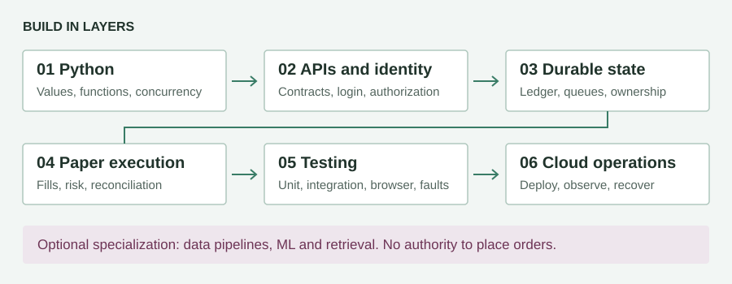

Rebuilding Your Trading Application
A practical book on Python software engineering and Google Cloud

Prepared for Amol. Edition 1, 19 September 2026.
This book teaches you to rebuild a trading application yourself, beginning with small Python programs and progressing to APIs, databases, secure login, asynchronous services, browser testing, cloud operations, and architecture. The aim is not to memorize your existing source code. It is to understand the decisions behind it, reproduce its useful behavior, and recognize where a different design would be safer.
Your existing application is the case study. You receive Chartink signals, resolve instruments, evaluate strategies, submit broker orders, reconcile actual fills, monitor exits, and show results in a browser. That one workflow contains nearly every difficulty that makes backend engineering interesting: untrusted input, timing, concurrency, partial failure, external contracts, persistent state, and human expectations.
This is a substantial project textbook and workbook, not an encyclopedia of every Python feature or a substitute for every professional cloud exam guide. It gives you a deep common foundation and specialization labs. Completing it is evidence of learning, not a guarantee of employment, seniority, certification, trading profitability, or production safety.
How to use the book
Read in order the first time. For each chapter, explain the concept aloud, implement the exercise without opening the existing implementation, write tests, and only then compare designs. Keep a notebook with four headings: prediction, observed behavior, explanation, and remaining uncertainty. A test failure is useful when you can explain why it occurred.
The accompanying lab directory is a deliberately small reference implementation. It uses a simulated broker and local SQLite. It has no live-order adapter and is not a production deployment. Build your own version in a new repository; use the reference to compare behavior rather than to bypass the exercises. The later chapters specify larger systems you must implement yourself. They do not claim those systems already exist in the reference lab.
Code blocks fall into three categories. The lab's files are runnable together. Short Python examples demonstrate a concept and name their dependencies. Architecture sketches and pseudocode explain contracts, not complete deployable services. Cloud commands create billable resources only where explicitly stated. Run cloud exercises in a disposable project, never in a client's production project.
Keep real access tokens, webhook secrets, client emails, encryption keys, Redis passwords, and trading records out of your learning repository. Use fictional symbols and sanitized fixtures. A secret pasted into a chat or committed to Git needs a rotation plan; deleting the visible text is not rotation. Do not casually rotate an encryption key without first planning how existing encrypted data will be decrypted and re-encrypted.
What exists and what you will add
The repository inspected for this book contains FastAPI, an HTML dashboard, Redis state and queues, Dhan and Kite adapters, a trade engine, authentication code, and separate API, alert, execution, market-feed, and reconciliation entry points. Its dependency file pins DhanHQ 2.2.0 and KiteConnect 5.0.1. Those are facts about this checkout, not a recommendation to use old pins forever.
PostgreSQL, SQLAlchemy, database migrations, a transactional outbox, BigQuery, Vertex AI, vector search, Terraform, and Kubernetes are learning extensions in this book. They are not silently attributed to the existing application. Start with the tools that solve your current problem; adding every cloud product to a single trading path would increase cost and failure modes.
| Existing reference | What to study there | What to question |
|---|---|---|
app/main.py |
API routes, auth, lifecycle, browser feed | How much responsibility belongs in one module? |
app/trade_engine.py |
Entry and exit decisions | Which rules should become pure functions? |
app/dhan_broker.py |
SDK boundary and feed recovery | Are responses validated before changing state? |
app/kite_broker.py |
A different broker contract | Are common names hiding different meanings? |
app/redis_store.py |
Persistence, key scope, TTL | Which facts must survive cache eviction? |
app/market_feed_service.py |
Subscription ownership and health | Connected, subscribed, or receiving fresh data? |
app/execution_service.py |
Queue consumption and worker lease | What happens between submission and acknowledgment? |
app/reconciliation_service.py |
Recovery and fallback pricing | What is broker evidence versus local expectation? |
app/order_locks.py |
Mutual exclusion and ownership | What happens when a lease expires during work? |
app/auth.py, app/email_service.py |
Email login workflow | Is verification atomic and abuse-resistant? |
app/static/dashboard.html |
Forms, fetch, WebSocket updates | Are browser labels backed by fresh evidence? |
tests/ |
Unit, integration and browser checks | Which failure cannot this test actually detect? |
Read code as evidence, not as scripture. A README can lag behind implementation; a test can encode a mistaken assumption. Follow a real input through the current routes and service boundaries.
Your development sequence
- Build a command-line calculator for quantity, target, stop, and P&L.
- Model immutable signals, orders, fills, positions, and strategy settings.
- Add a deterministic paper broker and unit tests.
- Save configuration and fills in a relational database.
- Expose a validated HTTP API with a consistent error contract.
- Add administrator bootstrap, password login, email verification, and TOTP.
- Build a dashboard that displays server state and handles failures.
- Add simulated ticks and confirm exits from actual simulated fills.
- Add durable background jobs, duplicate protection, and recovery.
- Implement broker adapters against sanitized fixtures and official contracts.
- Split the measured bottlenecks into independently supervised processes.
- Deploy a paper-only version to Google Cloud with HTTPS, monitoring, and restore tests.
- Add analytics and ML as separate, non-executing extensions.
- Conduct an architecture review, incident drill, and independent code review.
Do not begin with sixteen network services. A logical service can initially be a Python class. A process is an operating-system boundary; a distributed service adds network and operational boundaries. You can learn modularity before learning distributed failure.
A realistic study rhythm
Use four sessions per topic: learn and trace; implement; test and break; explain and refactor. At roughly ten focused hours each week, a 36-week first pass is a planning estimate, not a deadline. Someone new to programming may need longer. Advance when you can pass the chapter's exit exercise without following a tutorial.
Weeks 1-8 cover Python and algorithms. Weeks 9-14 cover API, SQL, and authentication. Weeks 15-21 cover trading state, feeds, and concurrency. Weeks 22-26 cover testing and browser integration. Weeks 27-32 cover cloud and operations. Weeks 33-36 cover one specialization and a capstone review. Work experience and maintaining software over time remain important for senior roles.
The essential safety rule
Use a simulator throughout this book. A successful HTTP response is not a confirmed fill. A green WebSocket badge is not proof of current prices. A passing test suite is not proof that every failure has been considered. Build evidence for each claim separately.
Sources and version policy
Official sources are linked near version-sensitive topics. They were consulted for this edition. Recheck SDK signatures, cloud product names, quotas, prices, exam guides, and broker requirements when you implement or book an exam. The cloud portfolio in your attachment is a list of possible paths, not a single syllabus, and its cross-vendor comparisons are approximate rather than equivalences.
Part One Python From First Principles
Chapter 1 Programs values and execution
A program is a sequence of instructions operating on values. Python's interpreter executes your source within a process. The process has memory, open files, sockets, and an exit status. A source file on disk is not a running process. Editing the file does not necessarily update a process that already imported it. This explains why a server sometimes needs a controlled restart after deployment.
A variable is a name bound to an object. The object has a type; the name can later refer to another object. quantity = 5 binds an integer. symbol = "RELIANCE" binds text. A string containing "5" is not the integer 5. HTTP often carries text, so boundaries require conversion and validation.
symbol = "RELIANCE"
quantity = 5
entry = 100
latest = 103
pnl = (latest - entry) * quantity
print(f"{symbol}: quantity={quantity}, P&L={pnl}")
The output is RELIANCE: quantity=5, P&L=15. Change latest to 97 and predict the output before running. Change quantity to "5"; explain the result rather than guessing what Python should do. Multiplication of a string repeats it, demonstrating why syntactically legal code can be semantically wrong.
Learn these basic types: int for whole numbers, float for approximate real arithmetic, bool for truth values, str for Unicode text, bytes for encoded data, and None for absence. 0, False, an empty list, and None are all false-like in conditions, but they do not mean the same thing.
One of your application's previous configuration risks illustrates this distinction:
payload = {"pending_retries": 0}
wrong = payload.get("pending_retries") or 1
raw = payload.get("pending_retries")
correct = 1 if raw is None else raw
assert wrong == 1
assert correct == 0
Zero is a legitimate request for no retries. Missing means the client did not specify a value. Never use truthiness as a substitute for a domain rule.
Build: Ask for a symbol, side, quantity, and price with input(). Convert quantity explicitly, reject nonpositive values, and print a paper-order summary. Do not connect to a broker.
Exit check: Explain source file versus process, text versus number, and missing versus zero. Include tests for blank input, negative quantity, and malformed price.
Chapter 2 Environments modules and a repeatable setup
A virtual environment isolates Python packages. It does not isolate the operating system, network, or live broker account. A requirements file records dependencies; a lock or fully resolved constraints record makes installations more reproducible. Security updates still require review and tests.
Create a separate learning repository. In Windows PowerShell:
mkdir trading-school
cd trading-school
py -3.12 -m venv .venv
.\.venv\Scripts\python.exe -m pip install --upgrade pip
git init
On Ubuntu use python3 -m venv .venv and .venv/bin/python. Use Python 3.12 or later for this book; test SDK compatibility before upgrading production. Do not install teaching dependencies into your deployed application's virtual environment.
Use python -m package.module to execute a module with a predictable import context. A package organizes related modules. Imports execute top-level statements once per interpreter import cache, so avoid placing live broker calls, network downloads, or background thread startup at import time.
def main():
print("Paper environment ready")
if __name__ == "__main__":
main()
The guard prevents main() from running merely because another module imports the file. It is particularly important when process workers import modules during startup.
Your project should contain src/ or one clear package, tests/, a dependency declaration, .gitignore, and a README with commands you have actually tested. Ignore .env, virtual environments, real datasets, and token-bearing screenshots. Commit a .env.example containing names and harmless placeholders only.
Build: Split your calculator into money.py, risk.py, and cli.py. Import functions rather than duplicating them. Explain what happens if two modules import each other. Resolve the cycle by moving shared types into a smaller module, not by hiding imports everywhere.
Debug drill: Deliberately install a package in the wrong interpreter. Compare python -c "import sys; print(sys.executable)" with the interpreter used by your service. Learn why "installed successfully" does not imply "available to this process."
Chapter 3 Conditions loops and collections
Conditions choose a path. Loops apply a rule repeatedly. A list preserves order and permits duplicates. A set represents membership without duplicates. A dictionary maps keys to values. A tuple is an immutable sequence, useful for composite identities such as (exchange, security_id).
Never identify an instrument only by a display name if multiple exchanges can use the same symbol. Never identify a client's position only by symbol when strategy ownership matters.
raw_symbols = [" sbin ", "TCS", "SBIN", ""]
symbols = list(dict.fromkeys(
item.strip().upper() for item in raw_symbols if item.strip()
))
assert symbols == ["SBIN", "TCS"]
This example assumes a list of strings. An API must validate that assumption first. dict.fromkeys removes duplicates while preserving first appearance. A set alone would lose that intended order.
Mutation changes an existing object. Assignment does not necessarily copy:
a = {"symbols": ["SBIN"]}
b = a.copy()
b["symbols"].append("TCS")
assert a["symbols"] == ["SBIN", "TCS"]
The dictionary copy is shallow; both dictionaries refer to the same inner list. Prefer immutable domain objects and deliberate construction rather than casually deep-copying huge state. Understand copy.deepcopy, but ask whether shared mutable state should exist at all.
Avoid modifying a dictionary while iterating through it. Gather keys to remove, then remove them, or construct a new dictionary. Use enumerate for positions and values, and zip(..., strict=True) when lengths must match. Silent truncation can hide mismatched quote and instrument arrays.
Build: Normalize a Chartink-like symbol list, retain input order, record rejected values, and produce one validation result per symbol. Add an explicit maximum count to prevent a huge payload from consuming unlimited memory.
Exit check: Explain why configuration dictionaries, subscription sets, and append-only fill lists have different purposes. Demonstrate aliasing with a ten-line program.
Chapter 4 Functions contracts and precise money
A function separates an operation from the details of its caller. Parameters are inputs; a return value is an output. A pure function has no externally visible side effects and depends only on its inputs. Pure sizing and stop calculations are easier to test than functions that also read Redis, call Dhan, and send Telegram messages.
Floating point is suitable for many measurements, but prices and tick-size alignment benefit from decimal arithmetic. Construct Decimal from text, not from a binary float whose rounding error has already occurred.
from decimal import Decimal, ROUND_CEILING, ROUND_FLOOR
def align_limit(price: Decimal, tick: Decimal, side: str) -> Decimal:
if not price.is_finite() or not tick.is_finite():
raise ValueError("Price and tick must be finite")
if price <= 0 or tick <= 0 or side not in {"BUY", "SELL"}:
raise ValueError("Invalid order-price inputs")
rounding = ROUND_CEILING if side == "BUY" else ROUND_FLOOR
units = (price / tick).to_integral_value(rounding=rounding)
result = units * tick
if result <= 0:
raise ValueError("Aligned price must be positive")
return result
assert align_limit(Decimal("100.03"), Decimal("0.05"), "BUY") == Decimal("100.05")
This rounds an aggressive buy limit upward. It is not a universal rounding rule for every order type. Circuit limits and an absolute slippage cap must still be checked after rounding. If rounding upward violates the cap, reject the request rather than silently paying more. Tick size comes from the correct instrument metadata; do not assume every stock uses 0.05.
For capital sizing, floor(capital / price) respects the stated allocation before fees and margin constraints. Your earlier requirement to buy at least one share even if it exceeds capital is a different policy. Name it allow_minimum_one_over_budget; do not conceal it inside arithmetic. With capital 10,000 and price 12,000, strict sizing returns zero and skips. The alternate policy returns one and explicitly exceeds the budget.
Avoid mutable default arguments such as def add(x, items=[]). Defaults are evaluated once, not per call. Use None and create a list inside. Use keyword-only parameters for safety-sensitive options, and annotations to document expectations. An annotation alone does not validate a web request.
Build: Implement strict sizing, optional minimum-one sizing, target, stop, and P&L as pure functions. Test BUY and SELL, zero, missing, infinity, NaN, invalid sides, and very small ticks. Explain the policy differences before optimizing anything.
Chapter 5 Exceptions files time and logging
Exceptions report that an operation could not meet its contract. Catch the narrow errors you understand. Catching Exception at a service boundary can prevent a process from crashing, but it must preserve an explicit failed state and alert operators. except Exception: pass converts failure into misleading silence.
Use try/finally or a context manager to release files, sessions, and locks. A leaked socket or event loop owns operating-system file descriptors; increasing LimitNOFILE may postpone a leak rather than repair it.
import csv
from pathlib import Path
def load_symbols(path: Path):
with path.open(encoding="utf-8", newline="") as handle:
for row in csv.DictReader(handle):
yield row["symbol"].strip().upper()
Use parsers for CSV and JSON. Splitting CSV on commas fails when quoted fields contain commas. Avoid deserializing untrusted pickle data, evaluating expressions from request bodies, or building shell commands from symbols.
Time has multiple meanings. Store event timestamps as timezone-aware UTC. Convert to Asia/Kolkata for trading-day rules and display. Use time.monotonic() for durations inside one process, because wall clocks can jump. Monotonic values from different machines or restarts are not comparable persistent timestamps.
from datetime import datetime, timezone
from zoneinfo import ZoneInfo
received_at = datetime.now(timezone.utc)
local = received_at.astimezone(ZoneInfo("Asia/Kolkata"))
print(local.isoformat())
Install tzdata in environments without the IANA timezone database, commonly Windows virtual environments. A weekday check is not an exchange calendar: holidays and special sessions need explicit treatment.
A log should answer what happened, to which entity, in which process, and with which correlation identifier. Log signal_id, intent_id, sanitized broker error class, and duration. Never log tokens, OTPs, entire environment files, or credential-bearing URLs. Metrics describe counts and latency distributions; logs explain individual events; traces link an operation across services.
Build: Read a small CSV, reject malformed records with row numbers, and emit structured summaries. Inject a clock function into your risk rules so tests do not depend on Saturday versus Monday.
Exit check: Explain why a current heartbeat timestamp does not prove that a stock's last tick is current.
Chapter 6 Objects dataclasses and interfaces
An object groups state with behavior. Use it when that grouping makes an invariant easier to preserve. Do not turn every small arithmetic function into a class. Prefer composition: an execution service has a broker and a repository; it is not a subclass of every broker and database.
from dataclasses import dataclass
from decimal import Decimal
from typing import Protocol
@dataclass(frozen=True)
class OrderIntent:
intent_id: str
symbol: str
side: str
quantity: int
limit_price: Decimal
@dataclass(frozen=True)
class AcceptedOrder:
broker_order_id: str
class Broker(Protocol):
def submit(self, intent: OrderIntent) -> AcceptedOrder: ...
The protocol expresses what a caller needs, not how a broker fulfills it. Dhan, Kite, and a paper broker can satisfy the same interface with different implementations. Crucially, AcceptedOrder contains no invented filled quantity. You need a separate fill or order-status contract.
frozen=True prevents assigning new attribute values, but does not recursively freeze an inner list. Use tuples where deep immutability matters. Dataclass equality compares fields; object identity asks whether two names refer to the same instance. Learn == versus is; compare values with equality and use is None for absence.
Class attributes are shared across instances. Accidentally defining positions = {} on a class can mix user state. Instance attributes belong to one object, but concurrent tasks can still access them. Encapsulation is useful only when callers cannot bypass the rules by mutating the underlying dictionary.
An abstract base class can enforce method implementation at instantiation. A protocol supports structural typing. Neither proves remote broker behavior. Contract tests bridge your Python interface and real wire-level examples.
Build: Write a paper broker that returns acceptance first and emits a fill later. Inject it into a service through a protocol. Test two instances to prove they do not share accounts accidentally.
Chapter 7 Iterators decorators typing and Python internals
An iterable can produce an iterator; an iterator yields its next item and eventually raises StopIteration. A generator function containing yield builds such an iterator lazily. This is useful for large historical data files, but it is not free streaming if you immediately wrap the result in list().
Decorators wrap behavior. Use functools.wraps to preserve metadata. A retry decorator around arbitrary functions is dangerous: retrying a read can be reasonable, while retrying an ambiguous order submission can place another order. A decorator must respect the side-effect semantics of the function it wraps.
from functools import wraps
from time import perf_counter
def timed(function):
@wraps(function)
def wrapped(*args, **kwargs):
start = perf_counter()
try:
return function(*args, **kwargs)
finally:
print(function.__name__, perf_counter() - start)
return wrapped
This is a synchronous teaching decorator. Wrapping an async def with it would measure coroutine creation, not awaited work. Write a separate async wrapper and test it with an actual awaited delay.
Learn TypedDict for dictionary shape, Literal for finite choices, Enum for named states, Protocol for behavior, and generics for reusable containers. Use mypy or pyright as a feedback tool. Runtime validation is still necessary where JSON enters the process.
Understand closures and late binding: a lambda in a loop can refer to the loop variable's final value. Understand descriptors by studying how property controls access. Understand MRO sufficiently to read a traceback involving inheritance. Metaclasses are an advanced extension mechanism, not an expected ingredient in a trading app.
Python implementations manage memory differently. In ordinary CPython, reference counting and cyclic garbage collection both matter. A retained dictionary of tasks can keep objects alive even when you expected them to disappear. tracemalloc studies Python allocations; operating-system RSS also includes native allocations and mapped pages. A high RSS does not automatically mean a Python reference leak.
Use inspect.signature on an installed SDK method when checking compatibility. Package version, Python version, installed file location, and actual method signature are more persuasive than an example copied from a different release. Do not catch every TypeError and resubmit an order with fewer arguments: a bug could have happened after a side effect.
Build: Stream a million synthetic ticks through a generator, calculating count and extrema without storing them. Measure peak memory. Add a typed protocol and run your type checker. Then implement and test the async timing wrapper.
Chapter 8 Algorithms complexity and practical data structures
Big-O describes how resource use grows with input size. It is not a stopwatch. An O(n) scan over 23 sectors can be simpler and faster in practice than maintaining a complex distributed ranking structure. A dictionary lookup is expected O(1), but network latency dominates a Redis lookup compared with an in-process dictionary.
For a rolling window use collections.deque, not repeated list.pop(0) which shifts elements. For expiring breakout watches, a heap can expose the next expiry efficiently. Keep a dictionary of active watch versions so obsolete heap entries can be discarded safely. A heap alone does not solve cancellation or replacement.
Sorting n sectors is O(n log n). For tiny n, sort the validated snapshot and use stable tie-breaking. For top-k from a large dataset, compare a heap-based O(n log k) approach. First exclude missing and stale values; treating missing as zero invents a ranking.
Practice these algorithms using project problems: binary search over sorted candle timestamps; sliding-window counts for login abuse; hashing for event deduplication; BFS for service-dependency analysis; intervals for session windows; prefix sums for cumulative depth quantity. Learn recursion with a base case, then identify where an iterative version is clearer.
Worked example: asks are 50 shares at 100.10 and 80 shares at 100.20. A buy of 100 needs the second level if the snapshot remains available. Cumulative quantities are 50 and 130. The relevant level is 100.20, not last-traded price. This is a linear scan of a short depth array; a search tree is unnecessary.
Build: Benchmark a list versus deque for 100,000 oldest-item removals. Implement top-sector ranking with deterministic ties. Explain worst-case space as well as time. Test empty input and repeated timestamps.
Part One review
Without looking at source, explain mutable defaults, aliasing, Decimal, UTC versus elapsed time, exceptions, context managers, generators, protocols, and O(n log n). Write tests for the sizing function from memory. The official Python tutorial is a companion reference for language details; this book supplies the project exercises and learning sequence.
Part Two APIs Databases and Authentication
Chapter 9 HTTP and API contracts
HTTP is a request-response protocol. A request has a method, path, headers, and optionally a body. A response has a status, headers, and optionally a body. JSON is a representation of data, not a guarantee of success. The earlier browser error Unexpected token I happened because code tried to parse plain Internal Server Error as JSON.
Design an API contract before a route function. State who may call it, which inputs are accepted, which durable effect occurs, which response means success, and whether repeating the request is safe. GET should not place orders. A webhook POST that returns 202 Accepted means work was accepted for processing, not that a trade filled.
Use 400 for malformed application requests, 401 for missing or invalid authentication, 403 for an authenticated caller lacking permission, 404 for unavailable resources, 409 for state conflicts, 422 for schema validation, 429 for limits, and 503 for temporary inability to serve. Do not force every failure into HTTP 200 just because the browser can parse it.
{
"ok": false,
"error": "CONFIG_NOT_FOUND",
"detail": "No active configuration matches this alert",
"request_id": "example-request-17"
}
Keep public errors useful but free of passwords, stack traces, SDK URLs, SQL, and internal paths. Log the detailed diagnostic under the request ID after redaction. A reverse proxy can still return HTML errors even if your application always returns JSON; the frontend must handle both.
An endpoint like /api/positions?user_id=2 must not trust the requested user ID as authorization. Derive the authorized account from the session and validate any requested scope against it. This remains relevant on a single-user installation because public URLs are still attacker-controlled inputs.
Build: Write an OpenAPI-style table for create strategy, receive signal, list positions, request exit, and read feed health. Include one happy response and three failures for each. Set body-size, symbol-count, and string-length limits.
Exit check: Explain why an HTTP 200 from /api/broker-status says nothing about whether its response body reports ticker_connected: false.
Chapter 10 FastAPI validation and dependency injection
FastAPI connects HTTP input to Python functions. Pydantic models validate structure and constraints. Dependencies provide services such as an authenticated principal, database session, or broker interface. Dependency injection makes tests easier because you can replace the broker without replacing the business rules.
from decimal import Decimal
from typing import Literal
from fastapi import FastAPI
from pydantic import BaseModel, ConfigDict, Field
app = FastAPI()
class StrategyInput(BaseModel):
model_config = ConfigDict(extra="forbid")
name: str = Field(min_length=1, max_length=120)
side: Literal["BUY", "SELL"]
quantity: int = Field(strict=True, gt=0, le=10000)
stop_pct: Decimal = Field(gt=0, lt=100, allow_inf_nan=False)
retry_count: int = Field(strict=True, ge=0, le=3)
@app.post("/validate-strategy")
def validate_strategy(payload: StrategyInput):
return {"ok": True, "strategy": payload.model_dump(mode="json")}
This isolated validation example does not authenticate or persist anything. extra="forbid" catches misspelled settings rather than silently ignoring them. strict=True prevents quantities such as boolean True from being treated as one. Decide whether numeric strings are accepted at your boundary, and test that decision.
Use application lifespan to acquire and close long-lived clients. Do not open a new Redis connection or HTTP session on every tick if a pool can be reused. Do not store a database session as a global shared mutable transaction. The repository gives useful examples to review, but your rebuild should keep route handling separate from domain decisions.
An async def route runs on an event loop. Calling blocking SDK code directly inside it can freeze other work. Use a bounded thread executor for synchronous network operations or an async client where appropriate. Ordinary synchronous route functions are handled differently by FastAPI; understand the distinction before moving code around. FastAPI concurrency guidance
Create a test-only application factory, create_app(settings, repository, broker), instead of mutating global production state. Production should fail startup when required secrets or storage are absent, not silently switch to a test backend.
Build: Add schema validation to your calculator API. Test unknown fields, missing names, boolean quantity, zero retry count, negative stop, and unexpected content types. Document whether configuration edits affect existing positions or only future entries.
Chapter 11 Relational database design
A database is not just a place to store JSON. It can enforce facts that must remain true under concurrency. A primary key identifies a row. A foreign key ensures a referenced row exists. A unique constraint prevents two transactions from creating the same logical record. A transaction groups changes into an all-or-nothing unit.
Your existing application uses Redis extensively. For the rebuild, introduce PostgreSQL as the durable ledger and keep Redis for fast transient state and queues. This is a proposed learning architecture, not a claim that Redis is inherently unsuitable or that PostgreSQL eliminates all failure.
Separate concepts that change independently:
| Entity | Key facts | Important constraint |
|---|---|---|
| Account | Admin ownership, broker connection reference | No cross-account reads |
| Strategy | Stable ID, display name, settings | Unique canonical name per account |
| Strategy version | Immutable settings used at decision time | Position references the version |
| Instrument | Broker, exchange, security ID, tick size | Unique composite identity |
| Signal | Source event, payload digest, timestamps | Scoped deduplication key |
| Order intent | Desired action and quantity | Stable intent ID |
| Broker order | Remote ID and submission state | Unique broker/account/order ID |
| Fill | Execution ID, quantity, price | Unique execution identity |
| Position allocation | Strategy-owned quantity and basis | No negative remaining quantity |
| Outbox event | Payload and delivery state | Written with the business transaction |
| Audit event | Actor, action, reason, timestamp | Append-only application policy |
Do not store target and stop only by looking up today's mutable strategy row. If a user changes a stop from 1% to 3%, yesterday's carry position should not silently change its risk policy unless the product explicitly supports that operation.
CREATE TABLE strategy (
id UUID PRIMARY KEY,
account_id UUID NOT NULL,
canonical_name TEXT NOT NULL,
display_name TEXT NOT NULL,
enabled BOOLEAN NOT NULL DEFAULT FALSE,
UNIQUE (account_id, canonical_name)
);
CREATE TABLE fill (
id UUID PRIMARY KEY,
account_id UUID NOT NULL,
broker_order_id TEXT NOT NULL,
execution_id TEXT NOT NULL,
quantity INTEGER NOT NULL CHECK (quantity > 0),
price NUMERIC(20, 8) NOT NULL CHECK (price > 0),
executed_at TIMESTAMPTZ NOT NULL,
UNIQUE (account_id, broker_order_id, execution_id)
);
This is a partial schema exercise; add account and order tables with foreign keys before production use. NUMERIC provides decimal storage. Store timestamps as TIMESTAMPTZ, but remember a trading date is a separate business attribute.
Normalize repeated facts instead of copying credentials into every strategy. JSONB can hold versioned strategy-specific options, but validate their schema and index deliberately. Do not use JSON to avoid deciding what an order means.
Build: Draw the entity relationships. Create migrations with Alembic and SQLAlchemy after first writing equivalent SQL manually. Add unique constraints, check constraints, and indexes. Make the database reject duplicate fills even when two workers race.
Chapter 12 Transactions concurrency and the outbox
Consider two requests that both read "no position" and then submit an entry. An application-level check alone does not prevent both. You need a serialized decision, durable reservation, or other concurrency control at the ownership boundary. A transaction cannot roll back an order already submitted to an external broker.
PostgreSQL isolation determines which changes a transaction can observe. Row locks can serialize updates to an existing row. They do not lock a nonexistent row in the same simple way, so unique constraints or explicit account/strategy guard rows matter. Serializable transactions can fail and require retry of the database transaction; never automatically replay external broker side effects inside that retry. PostgreSQL transaction isolation
For a manual exit, first atomically reserve the position for an exit intent. Commit that intent and an outbox row together. A worker later reads the intent and talks to the broker. Its crash recovery is based on the durable intent ID and broker evidence. This separates database atomicity from uncertain external execution.
The transactional outbox solves a specific problem: committing a state change and then crashing before publishing its event. Write both in one database transaction. A publisher sends pending outbox rows and marks them sent. It may publish twice if it crashes after sending but before marking. Consumers must deduplicate by event ID. Outbox does not magically create exactly-once broker execution.
Use optimistic concurrency for editable settings: update where version = expected_version, increment the version, and return conflict if another edit won. This avoids one browser tab overwriting another's changes unnoticed.
Learn parameterized SQL. WHERE name = ? or driver-specific placeholders keep data separate from SQL structure. Do not use f-strings to inject names into a query. SQLAlchemy's expression API provides parameters, but raw SQL inside it still requires care.
Build: Launch two concurrent entry requests and prove exactly one local intent is reserved. Crash a publisher after send but before acknowledgment and prove duplicate consumption does not duplicate position quantity. Add a migration rollback exercise on a disposable database, then explain why destructive rollback may not be safe for real fills.
Chapter 13 Redis as a cache queue and coordination tool
Redis stores typed data structures: strings, hashes, lists, sets, sorted sets, and streams. A key name is a convention, not access control. Scope it with environment and account. paper:account:17:tick:NSE_EQ:1333 is clearer than a global ltp key. Different logical database numbers are not a strong tenant isolation boundary.
TTL is appropriate for transient quotes and session expiry, not for deleting the only copy of an open position. Expired cache data should cause a fresh fetch or an explicit unavailable state, not a fabricated zero price. A daily rollover should archive dashboard history while preserving carry positions and audit records.
Pub/Sub delivers to active subscribers; it is not a durable backlog. Lists can implement queues but need a processing list and recovery policy. Streams provide consumer groups and pending entries. Whichever mechanism you choose, model worker crashes, redelivery, poison messages, and retention explicitly. Pin and consult your Redis version's command documentation before implementing recovery features.
A lock with SET key token NX PX duration has an owner token and expiry. Release it only if its stored token still equals yours, using an atomic script. Otherwise an old worker can delete a new worker's lock. Lease renewal can fail. For database writes, use a fencing version when possible. Brokers generally cannot validate your fencing token, so unknown submissions still require reconciliation and conservative ownership rules.
Connection pools avoid repeated handshakes. Pipelining reduces round trips, but is not automatically a transaction. Measure network latency, command latency, queue wait, and event-loop lag separately before blaming Redis. Your previous AuthenticationError was a credentials mismatch, not proof of a slow datastore.
Build: Implement a quote cache with a receipt timestamp and TTL; a durable signal queue with a dead-letter path; and a session store. Test restart, lost connections, password mismatch, duplicate delivery, and a lease expiring during a slow operation. Keep critical ledger data outside any eviction policy that can discard it unnoticed.
Chapter 14 Email ownership and secure login
An email address can serve as an identifier. It is not a password and does not prove ownership until verified. An administrator allowlist answers "which identity is permitted?" Email verification answers "can this person receive mail at this address?" Password and TOTP answer different authentication questions.
For your single-admin product, bootstrap must not be first-public-visitor-wins. Provision the allowed email and a one-time bootstrap secret out of band, or keep setup restricted to a trusted local/IAP session. Create the admin atomically. Once configured, setup must remain closed until an authorized backend recovery operation resets it.
Use a maintained password-hashing library and a contemporary password KDF such as Argon2id; choose work parameters by measuring your server and checking current guidance. Password hashes are not reversible encryption. Broker credentials and TOTP seeds must be recoverable by the application and therefore require protected encryption instead. Rate-limit password work so expensive verification cannot exhaust the server. OWASP authentication guidance
Email verification flow
- Validate and canonicalize the address using a deliberate policy. Do not invent Gmail dot-removal rules for every domain.
- Return a generic response so public callers cannot enumerate registered accounts.
- Generate a cryptographically random, high-entropy token for a verification link.
- Store a digest, purpose, account binding, creation time, expiry, and consumed time.
- Send an HTTPS link through an email provider, using a trusted configured base URL rather than an untrusted Host header.
- On confirmation, atomically mark the token consumed and the account verified.
- Reject reuse, expiry, purpose mismatch, and a different account binding.
import hashlib
import secrets
token = secrets.token_urlsafe(32)
token_digest = hashlib.sha256(token.encode("utf-8")).hexdigest()
assert len(token_digest) == 64
Only the digest belongs in the token table. This unkeyed digest is reasonable for a high-entropy random token; a six-digit OTP is a different case because its entire space is small. For OTPs, use a server-secret HMAC bound to challenge ID, purpose, and account, plus atomic attempt limits and expiry. Never log either token type.
Email scanners may prefetch links. Prefer a landing GET that does not consume the token and an explicit confirmation POST. Avoid third-party resources on the landing page, use an appropriate Referrer-Policy, and avoid retaining tokens in analytics or proxy query logs. Password-reset tokens must not be interchangeable with email-verification tokens. OWASP reset-token guidance
Sending mail reliably
Implement an email-provider interface. Use a local fake inbox in tests and a sandbox account in staging. SMTP acceptance means the receiving server accepted the message, not that it reached the inbox. Retry transient sending failures with a bounded notification queue; do not block order processing while email is down.
Configure SPF for permitted senders, DKIM signing, and a staged DMARC policy for your domain. Monitor delivery failures and complaints. These controls improve domain authentication, not recipient identity. Compute Engine restricts some outbound SMTP traffic; use a documented provider integration or supported authenticated submission path rather than assuming port 25 works. Google Cloud mail guidance
Build: Implement verification and password reset against a fake email sender. Test resend limits, email enumeration, token reuse, concurrent redemption, wrong purpose, provider failure, and link scanning. A failed email send must never expose the OTP as a debugging fallback.
Chapter 15 TOTP sessions and broker authorization
TOTP calculates a short code from a shared seed and time. Use a maintained library such as PyOTP; do not implement cryptography yourself. Display the enrollment QR only after password verification. Keep enrollment pending until a valid code is confirmed. Encrypt the seed, never log it, and restrict access to it.
On login, verify the password first, then challenge for TOTP, then issue a full session. A pending MFA session must not access trading routes. Record the accepted time step atomically to prevent simultaneous reuse where your policy requires replay protection. Keep the tolerated clock window narrow and monitor time synchronization.
Recovery is part of authentication, not a bypass. Generate one-use recovery codes, show them once, store their digests, rate-limit attempts, and audit use. A developer reset must require trusted VM/IAM access, revoke existing sessions, remove pending challenges, and document who approved it. Do not delete strategy or position records while resetting authentication.
Use opaque, unpredictable session tokens stored server-side by digest. Cookies should have HttpOnly, Secure under HTTPS, a constrained path, and an appropriate SameSite policy. Rotate the session after authentication and privilege changes. Revoke it on logout. Check authorization for both HTTP and WebSocket routes.
Cookie-authenticated state changes need CSRF defenses. CORS controls browser cross-origin reading; it is not authentication and does not stop non-browser attackers. Validate WebSocket origins and authenticate the handshake. A terminal curl does not inherit the browser's session, explaining ADMIN_AUTH_REQUIRED even after browser login.
Keep application login separate from broker authorization. A logged-in administrator is allowed to manage the app but may still have an expired Dhan token. Broker consent callbacks must bind to a short-lived server-side pending flow and the intended account. Do not consume any callback token on behalf of whichever user ID appears in a query. Only use state or PKCE mechanisms the provider actually supports; add a secure local transaction binding when designing around provider constraints. Check the current Dhan authentication contract before implementing its consent flow.
Build: Draw the states UNCONFIGURED, PASSWORD_SET, MFA_PENDING, ACTIVE, and RECOVERY_REQUIRED. Test every forbidden transition. Verify that neither email verification nor a successful broker login accidentally grants an admin application session.
Part Three Trading State and Distributed Systems
Chapter 16 Model the lifecycle before writing the broker call
The safest place to begin is a state machine. An order is not a boolean success flag. A local intent can be CREATED, SUBMITTING, ACCEPTED, PARTIALLY_FILLED, FILLED, CANCEL_PENDING, CANCELLED, REJECTED, or UNKNOWN. Preserve the broker's raw status alongside your normalized status because different brokers use different vocabulary.
UNKNOWN is essential. If a submission times out after the broker receives it, the application cannot infer rejection. Immediately repeating the submission may create another order. Persist the intent before submission; persist the broker order ID when available; reconcile using supported broker lookups and correlation identifiers. An identifier field is not necessarily a provider-enforced idempotency key.
The position changes when fills are confirmed, not when the order endpoint returns an ID. Suppose quantity 10 is accepted, four shares fill, and the rest remain open. Your position is four shares. If you cancel the remainder, wait for terminal evidence and recheck fills before creating a new order. A cancellation request can race a fill.
signal -> validated decision -> durable intent -> broker acceptance
-> confirmed fills
-> position ledger
timeout --------------------------------------> unknown -> reconcile
Every fill needs deduplication. A trade can appear in a live update, a trade-book poll, and a restart reconciliation. Those are three observations of one fact, not three new purchases. Prefer broker execution identifiers where available. Do not infer a new fill from a repeated cumulative quantity without calculating and validating the delta.
Separate requested, cumulative filled, cancelled, and remaining quantities. Never reset cumulative filled to zero when a later retry fails. Persist every child order under the same intent. Quantity invariants should be executable tests, for example 0 <= total_confirmed_fill <= requested_quantity for a simple nonsliced intent.
Build: Write a paper broker scenario that accepts an order, fills four shares, loses the update, and later reports the fill in the trade book. Deliver the report twice. Your position must still contain four shares. Explain what evidence is needed before submitting the remaining six.
Chapter 17 Classic strategy math and exit behavior
Classic mode uses configured direction and percentage rules. A candidate signal does not imply strategy-candle confirmation unless that extra filter is explicitly enabled. Treat each filter as a separately testable decision with a reason code.
For a BUY at entry E, target is E * (1 + target_pct / 100) and initial stop is E * (1 - stop_pct / 100). For SELL, reverse the signs. With entry 100, target 2%, and stop 1%, BUY exits at or above 102 or at or below 99. SELL exits at or below 98 or at or above 101. These are trigger conditions, not promises of execution at those prices.
The entry should be the weighted average of confirmed fills. If two shares fill at 100 and three at 102, average entry is (2*100 + 3*102)/5 = 101.20. Broker fees, taxes, and realized adjustments require separate fields; gross marked-to-market P&L is not net account profit.
Trailing and cost stops
A BUY trailing stop uses the highest observed valid price since entry; a SELL uses the lowest. For BUY, the effective stop must not decrease when price falls. For SELL it must not increase. A fresh tick receipt timestamp does not guarantee a valid market timestamp, so validate source and ordering before updating extrema.
from decimal import Decimal
def long_effective_stop(old_stop, high_water, trail_pct):
candidate = high_water * (Decimal("1") - trail_pct / Decimal("100"))
return max(old_stop, candidate)
assert long_effective_stop(Decimal("101"), Decimal("103"), Decimal("2")) == Decimal("101")
Apply this function only when trailing is enabled. If cost SL is enabled with initial SL 0.6% and RR 2, a 1.2% favorable move can move the stop to entry. Do not derive the trigger from an already-trailed stop, because that changes the original risk unit. A price stop at entry is not financially break-even after costs.
Pyramiding adds confirmed quantity, not merely requested quantity. Decide whether targets rebase to average entry and whether a new stop can ever loosen. Preserve a monotonic protective stop unless the user has explicitly authorized a different policy. Track number of completed adds separately from pending add intents.
Multiple exit rules can fire on one tick. Evaluate reasons deterministically and reserve one exit intent per owned position. A target rule, alert exit, manual exit, and trailing stop must not each send a full sell. Partial exit fills reduce remaining quantity; they do not mark the entire position closed.
Build: Test BUY and SELL target equality, stop equality, trailing disabled, cost-only mode, a gap beyond stop, two simultaneous exit requests, partial exits, and pyramid fills at different prices. Add the regression: a BUY stop that reached 101 must never return to 100 after a lower tick.
Chapter 18 Configuration ownership and the full feature map
Use a stable strategy ID as the owner. Alert names are external lookup keys and display strings. Define normalization once; preserve the original display name; reject genuine collisions rather than selecting an arbitrary configuration. An edit to an existing strategy should identify that strategy, so changing unrelated fields is not mistaken for a duplicate creation.
For alert-based exit, match account, configured exit-alert identity, owning strategy, instrument, and open quantity. Strategy A's exit alert containing DABUR must not close Strategy B's DABUR position. If broker netting aggregates the same instrument across strategies, keep a local allocation ledger and reconcile aggregate broker quantity against the sum of those allocations. Account-level exits are a separate, explicitly broader operation.
| Feature | Rebuild exercise | Required failure test |
|---|---|---|
| Enabled strategy | Immutable configuration versions | Disabled alert cannot enter |
| Direction and product | Validate supported combinations | Unsupported CNC short rejected |
| Capital or fixed size | Separate sizing policies | Zero, missing and over-budget behavior |
| Entry window | Exchange timezone and date | Exact start/end boundaries |
| Daily trade limit | Atomic reservation and release policy | Simultaneous alerts at the limit |
| Sector filter | Direction-aware valid snapshot | SHORT chooses lowest changes |
| Breakout | Anchored candle and persistent watch | Expiry and duplicate wakeups |
| Target and SL | Pure trigger calculations | Gap and partial exit |
| TSL and cost SL | Independent toggles | Stop cannot loosen |
| Pyramiding | Child intents and average basis | Duplicate add request |
| CNC carry | Durable ownership and restart restore | Missing holdings is not assumed sale |
| Account P&L exit | Explicit product/account scope | Misleading UI scope rejected |
| Kill switch | Block entries without blocking recovery | Existing risk monitoring continues |
| Telegram | Async bounded notification queue | Sending failure cannot block exits |
| Backtest | Isolated research worker | No access to live broker adapter |
| Daily reset | New dashboard view and counters | Carry positions survive |
For CNC carry, broker positions and holdings can represent different settlement phases. Preserve unresolved ownership until there is evidence. Do not adopt every manually purchased holding as an app-managed position. Confirm available sell quantity and broker authorization requirements before an exit. A process running overnight cannot guarantee a fill while the exchange is closed.
Daily P&L controls must define realized versus unrealized, gross versus net, account-wide versus app-only, and MIS versus CNC scope. The visible label must match the implementation. An application kill switch is not automatically the broker's account-wide kill switch; broker controls may have different prerequisites and effects.
For Telegram, store bot secrets securely, scope destinations, and send only opted-in strategy messages. Deduplicate the 09:05 IST welcome by destination and trading day. Five-minute P&L jobs should not create duplicate account messages per strategy. Label stale or unavailable MTM instead of publishing zero. These are notification semantics, not part of order acknowledgment.
Build: Implement one feature per pull request with a saved-configuration roundtrip test and a behavior test. Keep a feature matrix with implemented, tested, documented, and deferred columns. Do not mark a feature complete because its toggle appears on screen.
Chapter 19 Candles breakout watches and sector ranking
A candle summarizes an interval. For a one-minute signal received at 10:30:03 IST, the previous fully closed interval is 10:29:00 through 10:30:00, usually treated as start-inclusive and end-exclusive. For five minutes at the same instant, anchor to 10:25 through 10:30. Know whether the provider labels a candle by opening time or closing time.
Fetch the required historical candle through a broker adapter, validate instrument and interval, convert timestamps correctly, and exclude the still-forming candle. Do not assume every API's interval names or timezone semantics are identical. If resampling from one minute, anchor to the exchange session and detect missing bars rather than pretending gaps contain real data.
Store the selected reference high or low when the signal creates a breakout watch. Re-fetching "previous candle" every minute changes the strategy. If the user means a rolling reference, expose that as a different mode. Define the buffer's unit explicitly: 0.10 rupees and 0.10% are very different.
For LONG, the threshold is the reference high plus the chosen buffer; SHORT uses the reference low minus it. Define whether touching the threshold qualifies or a strict crossing is required. This book uses >= for LONG and <= for SHORT as a documented exercise policy.
A watch expires at the earlier of signal-receipt time plus TTL and the strategy entry end time. With a two-minute TTL at 10:30:03, expiry is 10:32:03 unless the entry window closes earlier. Persist it so a restart neither forgets it nor extends its life. On trigger, recheck kill switch, duplicate ownership, available budget, current config policy, and market-data freshness. Use a single-consumer claim to prevent two ticks submitting two entries.
Sector percentage is (current_index_price - previous_session_close) / previous_session_close * 100. Previous close must be positive and identified by the correct previous trading session, not simply yesterday's calendar date. Premarket data can legitimately show LTP equal to previous close; a cached pct: 0 at 08:46 is not a live ranking at noon.
Cache the baseline; update the numerator from live validated ticks. A current-day market close must not overwrite the previous-session baseline while calculating that day's change. Separate baseline health, live-price health, and ranking completeness. For LONG sort descending; for SHORT sort ascending. Decide whether eligibility additionally requires positive or negative movement, because "lowest-ranked" does not necessarily mean negative.
Unknown sector mapping should produce an explicit policy outcome only when the filter is enabled. Instrument/security-ID resolution is a different concern and must work independently of membership in your curated sector list.
Build: Simulate a Friday-to-Monday cache, an intraday cache refresh, one missing index, equal percentages, and SHORT ranking. Add a watch at 10:30:03, advance a fake clock, and verify it cannot fire after expiry or change reference candle silently.
Chapter 20 Async concurrency and bounded work
Concurrency means handling overlapping work. Parallelism means executing work simultaneously. An event loop switches between coroutines at await points. It does not make blocking CPU work nonblocking. Threads can help with synchronous I/O; process workers are useful for CPU-heavy backtests and isolation. Do not rely on a particular GIL configuration as your correctness mechanism.
import asyncio
async def worker(queue):
while True:
job = await queue.get()
try:
if job is None:
return
await asyncio.sleep(0)
finally:
queue.task_done()
async def main():
queue = asyncio.Queue(maxsize=32)
async with asyncio.TaskGroup() as group:
for _ in range(2):
group.create_task(worker(queue))
for number in range(100):
await queue.put(number)
await queue.join()
for _ in range(2):
await queue.put(None)
if __name__ == "__main__":
asyncio.run(main())
The bounded queue applies backpressure. It does not persist jobs, and a worker crash in this simple example ends the task group. Learn that behavior before replacing the queue with Redis. Never call asyncio.run inside an already running event loop or create a new loop for each market tick.
Handle cancellation deliberately. Cancelling an await around asyncio.to_thread does not necessarily stop the thread or undo its network call. If the operation may have submitted an order, cancellation creates an unknown outcome requiring reconciliation. Preserve ownership until that uncertainty is resolved.
Use a semaphore to bound concurrent candle requests and a separate rate limiter for broker request quotas. They solve different problems: concurrency limits in-flight work; rate limits requests per time. Reserve capacity for exits and reconciliation so a burst of entry signals cannot starve safety work.
A queue of obsolete ticks is harmful even if nothing was dropped. Preserve original receipt timestamps so delayed work cannot appear fresh. Dashboard updates can often coalesce to the newest price. Risk checks may need ordered ticks and extrema to avoid missing a brief stop crossing. Define overflow behavior explicitly; silently dropping risk events is not acceptable.
Build: Inject a slow candle API while ticks continue. Measure tick handling delay. Cap concurrency, then compare latency before and after. Kill a task during simulated submission and verify your system records uncertainty rather than retrying blindly.
Chapter 21 Broker adapters and WebSocket evidence
A broker adapter isolates external request shapes, response validation, error normalization, and version differences. It should expose domain operations without pretending that Dhan and Kite have identical product names, instrument identifiers, depth packets, or authentication.
Read the pinned SDK source and official API contract together. Dhan's market feed uses subscription requests and binary market responses; its order-update feed is a different channel. Kite also supplies a binary market stream with separate message handling. Let the supported SDK parse protocol packets where possible, and test your normalization against sanitized fixtures. Dhan market feed, Kite WebSocket protocol
Track at least these states separately: credentials valid, socket connecting, socket open, subscription requested, first tick received, latest tick fresh, reconnecting, and authentication blocked. A service heartbeat is not a broker heartbeat. A subscription request sent is not exchange acknowledgment. REST fallback must be marked as REST, not relabeled as a WebSocket tick.
Keep one connection owner per broker account where required by your architecture. Token changes must notify that owner. Recreate a stale client on credential change; do not require the operator to discover that an old token remains in memory. Maintain the active subscription set and replay it after reconnect. Deduplicate instrument subscriptions by exchange and security ID.
Use exponential backoff with jitter for transient failures. Authentication rejection should stop futile retries and request reauthentication. Do not reconnect aggressively merely because an event-based instrument has no recent trades. Outside the market session, absence of ticks is not enough to diagnose a broken socket.
Store both source and receipt time with prices. If a REST fallback is permitted, enforce its age and rate limits and make degraded status visible. Fallback may support temporary monitoring but cannot guarantee instant exits during provider or network failure.
For aggressive limits, use fresh ask depth for BUY and bid depth for SELL; inspect cumulative depth for quantity; apply a bounded buffer; align to instrument tick size; enforce circuit and slippage limits. Depth is a snapshot, not a reservation. No algorithm can guarantee instant execution. Broker rejection must retain its specific reason. Dhan order contract
Build: Maintain a capability table for each SDK version. Replay malformed packets, expired-token disconnects, duplicate subscriptions, stale ticks, and order updates with missing quantities. Assert that malformed broker data cannot create a fill. A package upgrade is a change requiring contract tests, not a routine blind install.
Chapter 22 Service boundaries recovery and architecture drawings
Your target has five deployable processes: API/dashboard, alert intake, market feed, execution, and reconciliation. The sixteen logical responsibilities discussed earlier can live inside these processes as modules. Separate logical ownership first; add more processes when workload isolation, fault containment, or scaling justifies them.
Browser --HTTPS--> Nginx --> API/dashboard --read--> state
Browser <--WSS---- Nginx <-- notifications <------- tick/state bus
Chartink --> authenticated intake --> durable signal queue
|
strategy + decision + breakout watch
|
execution owner --> broker
^ |
| orders and fills
Broker market feed --> normalized ticks --> risk reconciliation
| |
+---- durable position ledger
Email / Telegram / analytics consume events outside the order path
Keep the API from directly bypassing execution ownership for manual square-off. A manual command is another durable intent. The reconciliation process observes broker facts and updates the ledger through the same quantity rules, rather than editing arbitrary Redis fields without accounting.
Think through failure windows: before enqueue, after enqueue before acknowledgment, after claim, after broker submit before recording ID, after a partial fill, and after a database commit before publishing. Write a recovery policy for each. The most dangerous interval is not necessarily the slowest one.
Delivery guarantees apply at particular boundaries. At-least-once queue delivery is compatible with deduplicated local effects. End-to-end exactly-once trading is not obtained by naming a queue "exactly once." The broker, network, ledger, and consumer all have independent failure semantics.
Start capacity planning with assumptions: candidate signals per minute, active instruments, ticks per second, concurrent browsers, broker call quota, and acceptable queue delay. Estimate average queued work with Little's Law, L = arrival_rate * time_in_system, when stable. Then measure p95 and p99 latency; averages hide bursts. A queue growing faster than it drains needs admission control, not unlimited RAM.
Use liveness for process viability and readiness for safe work acceptance. A disconnected broker might make new-entry readiness false while the API must remain available for status and recovery. Restarting every component on every failed dependency can amplify an outage.
Build: Draw a context diagram, container/process diagram, signal sequence diagram, and order state machine. Annotate each arrow with authentication, timeout, durability, and retry policy. Explain why dashboard WebSocket failure and Dhan WebSocket failure are independent paths.
Part Four Frontend Integration and Software Testing
Chapter 23 Browser fundamentals for a backend developer
HTML describes content and form controls. CSS controls layout. JavaScript handles events and communicates with your API. The DOM is the browser's current document tree, not the server database. A number displayed on a page may be stale even while the backend is healthy.
Use labels associated with controls, semantic buttons, keyboard focus, and readable validation messages. Disabled controls should express actual unavailable actions. A hidden field is not a security boundary. User IDs and prices submitted by the browser remain untrusted.
Use server-calculated risk values for display. The browser can preview a calculation, but the execution path must validate and calculate again. Prevent duplicate submissions for usability, then enforce idempotency on the server for correctness. Closing a browser tab must not stop server-side risk monitoring.
async function fetchJson(url, options = {}) {
const response = await fetch(url, options);
const text = await response.text();
let data;
try {
data = text ? JSON.parse(text) : null;
} catch {
throw new Error(`Unexpected server response (${response.status})`);
}
if (!response.ok || data?.ok === false) {
throw new Error(data?.detail || `Request failed (${response.status})`);
}
return data;
}
This handles proxy-generated non-JSON without exposing the full raw response. Production also needs timeout/cancellation, session-expiry behavior, and accessible error display. Retrying a GET differs from retrying a square-off POST.
Render untrusted symbols and error messages with textContent, not HTML concatenation. Avoid placing secrets into URLs, DOM attributes, analytics events, or browser local storage. A webhook copy button can use the Clipboard API under its browser security requirements and provide a clearly labeled fallback when unavailable.
For mobile, test the actual layout at narrow widths. A table may scroll horizontally inside its container; the entire page should not overflow. Use one-column forms at small sizes, predictable grouping, and touch-sized controls. Do not make a modal so tall that its Save button becomes inaccessible. Preserve a visible stale-data indicator even on mobile.
Build: Implement configuration save/reload with server validation errors shown next to the relevant field. Submit zero retries and verify zero survives reload. Display an offline banner without removing the last known position data or pretending it is fresh.
Chapter 24 Unit testing as executable design
A unit test checks a small behavior with controlled inputs. It should explain a rule, not merely execute lines. Arrange the state, act once, and assert the important outcome. Test names should describe behavior such as test_long_stop_never_decreases rather than test_function_7.
from decimal import Decimal
import pytest
@pytest.mark.parametrize("capital,price,expected", [
("10000", "2000", 5),
("10000", "12000", 0),
("0", "100", 0),
])
def test_strict_sizing(capital, price, expected):
quantity = int(Decimal(capital) // Decimal(price))
assert quantity == expected
The parameterized example checks a mathematical policy; your production function also needs input validation and fee policy. For risk rules, use a fake clock and explicit ticks. Do not rely on today's date or a running exchange.
Fixtures provide setup and cleanup. A test database fixture should start empty and clean itself afterward. A fake broker should record calls and allow scenarios: reject, partial fill, delayed fill, timeout after acceptance, and unknown response. A mock that always returns success cannot test reconciliation. pytest fixtures
Use property-based tests for invariants: aligned prices are multiples of tick size; a long stop is monotonic; confirmed fill deduplication is idempotent; position quantity never becomes negative. Use mutation testing to ask whether changing >= to > makes a test fail. Coverage measures executed lines, not the truth of the expected result.
Build: Write a failing test before fixing a bug. For the zero-default bug, assert retry_count == 0 after a save/reload. For quantity safety, send the same fill twice and assert the ledger is unchanged after the second delivery.
Chapter 25 API and real integration tests
Integration tests check collaborating components. Use an actual disposable Redis or PostgreSQL instance when testing transactions, expiry, scripts, locking, or consumer recovery. An in-memory fake is useful for fast tests but may not reproduce atomicity, serialization, network failures, or database constraints.
Test a full vertical slice: HTTP request, validation, transaction, queued work, simulated broker event, ledger update, and response query. Assert stored evidence as well as status codes. A route returning 200 while discarding a setting is still broken.
For the bundled lab, from its directory:
python -m pytest -q tests/test_domain.py tests/test_api.py
The lab creates a fresh temporary SQLite database per test. It never imports your live application or broker SDK. Later, repeat the same contract against PostgreSQL and Redis implementations rather than assuming the lab proves their behavior.
API cases must include unauthenticated and unauthorized access, malformed bodies, unknown configuration, duplicate event IDs, conflicting reuse of an event ID, zero values, oversized input, expired sessions, and missing dependencies. Test that an error response does not include a Redis password or token-bearing URL.
For broker contract tests, pin an SDK version, intercept its HTTP transport, and validate exact serialized requests and parsed responses. Keep fixture metadata identifying API version, instrument, and capture date. Scrub credentials. A contract fixture is not a live sandbox; it detects changes you have modeled, not every future provider behavior.
Build: Run the same signal twice and prove only one paper position exists. Reuse its ID with a different payload and require conflict. Save a config, restart the app against the same test database, and retrieve it. Inject a storage error and ensure the API does not claim a durable enqueue succeeded.
Chapter 26 Playwright with Python
Playwright controls real browser engines. It can verify that a person can operate the UI and that the UI interacts correctly with the backend. Use accessible role and label selectors where possible. Avoid brittle selectors based on the fifth nested div or arbitrary sleep calls.
Install its Python pytest plugin in the learning environment, then install a browser:
python -m pip install pytest-playwright
python -m playwright install chromium
The included browser test starts a paper-only local API subprocess itself, saves a strategy through the form, sends a simulated signal through the API, verifies a rendered open position, applies a target-reaching simulated tick, and verifies a closed position. This is frontend-to-backend integration, not a screenshot of static HTML.
from playwright.sync_api import expect
def verify_strategy_form(page, base_url):
page.goto(base_url)
page.get_by_label("Strategy name", exact=True).fill("Practice")
page.get_by_role("button", name="Save strategy", exact=True).click()
expect(page.get_by_role("status")).to_contain_text("Saved")
This illustrative function assumes the lab form's other fields retain valid defaults. Use Playwright's web-first assertions, which retry until the condition or timeout, rather than checking DOM text immediately after a network request. Playwright Python pytest guidance
For production authentication tests, use an isolated test administrator and a fake email inbox. Generate TOTP from a test seed without logging production seeds. Do not disable authentication in the only browser suite; keep a separate suite for login, CSRF, session expiry, and authorization.
Capture traces and screenshots on failure. Traces may include requests, cookies, and page content, so treat them as sensitive artifacts with short retention. Run desktop and mobile viewports; also use Firefox or WebKit for cross-engine coverage when your support policy requires it.
Build: Add browser cases for expired session, a 502 HTML response, WebSocket disconnect, zero retries, form reload, and horizontal overflow. Simulate backend messages rather than opening real broker connections. Verify both visible output and backend records.
Chapter 27 Fault injection performance and security tests
Reliable software is tested under failure, not only with fast successful mocks. Inject delayed responses, malformed JSON, lost order updates, duplicate fills, Redis disconnects, clock boundaries, worker termination, and cancellation during an in-flight submission. Record the expected final state before running the experiment.
| Fault | Required behavior |
|---|---|
| Submission response lost | Mark unknown and reconcile; no blind new order |
| Consumer dies after claim | Recover only with ownership and idempotency rules |
| Ticks arrive late | Preserve receipt time and reject stale entry evidence |
| Telegram stalls | Trading path continues; notification is bounded |
| Dashboard disconnected | Server monitoring continues; browser shows degraded state |
| Database unavailable | No false success for unpersisted critical work |
| Two admin setups race | Exactly one bootstrap succeeds |
| Broker token rotates | Feed owner reloads credentials without process-wide guesswork |
| CNC missing from holdings | Preserve unresolved ownership and investigate positions |
Measure end-to-end timestamps: received, validated, queued, claimed, priced, submitted, acknowledged, filled, and displayed. A two-millisecond function is irrelevant if its job waited five seconds in a queue. Use percentiles and error rate under a stated workload; never claim "superfast" without a reproducible measurement.
Define a load scenario before running it: for example, 50 paper signals per minute, 100 watched instruments, 1,000 synthetic ticks per second, and three dashboards. These are exercise inputs, not measured capacity of your app. Record machine size, software versions, duration, queue maximum, event-loop lag, RSS, descriptor count, and broker calls. Test a short burst and a long soak.
Do not load-test live broker order endpoints. Use a fake transport with realistic delays and errors. Avoid overwhelming a client's production VM with local stress tools during market hours.
Security tests should try cross-account IDs, session replay after logout, TOTP replay, CSRF, HTML in symbol names, malformed content types, arbitrary redirect destinations, path traversal in exports, secret-bearing error responses, and unauthorized WebSocket origins. Scan dependencies, but distinguish a vulnerability finding from a verified exploit in your deployment.
Build: Write a failure matrix with evidence links. Stop an isolated worker during every important state transition. Explain why systemctl active and a clean error grep cannot prove business correctness.
Chapter 28 CI and evidence based release decisions
Continuous integration should run formatting, static checks, unit tests, integration tests, contract tests, and selected browser tests on every proposed change. Separate fast feedback from slower scheduled fault and soak tests. Treat flaky tests as defects; endless retries can hide a real race.
Build one immutable artifact and promote it between environments. Pin dependencies, record the Python and SDK versions, and review changes in transitive packages. Include a vulnerability scan and secret scan, but do not make their green output your entire security argument.
A release report should say what changed, which tests ran, their environment, what was not tested, known limitations, migration steps, and rollback conditions. For example, "paper broker tested; no live exchange validation" is honest. "All bugs fixed" is not a defensible test result.
Database migrations need compatibility planning. Add new optional fields before making readers depend on them. Deploy producers and consumers that tolerate the transition. Avoid deleting old data while older workers may still need it. Rollback of code and rollback of state are different operations.
For a trading deployment, pause new entries during ownership handover, preserve exit monitoring, drain or reconcile in-flight intents, restart with a known version, and check feed and queue readiness before resuming. Do not deploy two live execution owners as a conventional blue-green test without explicit fencing and account isolation.
Build: Write a CI workflow for the learning repository and deliberately introduce a failed zero-value test, a syntax error, and an accidental secret placeholder matching your scanner rule. Verify each fails for the intended reason. Present a release checklist that another person can follow without knowing your terminal history.
Part Five Google Cloud and Production Operations
Chapter 29 Cloud fundamentals and resource hierarchy
Cloud computing gives you programmable access to compute, storage, networking, identity, and managed services. It does not remove architecture decisions. A VM is still a running operating system with patching, filesystem capacity, network access, and process supervision to manage.
An organization can contain folders and projects. A project groups resources, API enablement, quota, and IAM policies. A billing account pays for linked projects. IAM answers who can do which operation on which resource; billing linkage is not itself permission to administer every workload.
For client isolation, use a dedicated project and separate identities, secrets, databases, and deployment state. Identical local usernames on separate VMs do not inherently mix clients. Copying a populated Redis database, shared broker token, production .env, or globally configured webhook URL can. A VM administrator can normally read code and secrets available to that VM; obfuscation is not a strong boundary against the owner of the machine.
A region is a geographical area; a zone is a deployment location within it. Mumbai is asia-south1, with zones such as asia-south1-b. A zonal outage can stop a single VM. Choosing another zone may solve a capacity error but does not create high availability for an existing one-VM deployment.
Learn the difference between quota and capacity. Quota is a project/account limit; capacity is currently available provider infrastructure. ZONE_RESOURCE_POOL_EXHAUSTED does not imply your Python code is broken. An under-200-GB disk performance warning does not mean Google created a 200-GB disk; inspect the actual disk resource.
Lab: In a disposable project, list enabled APIs, assigned IAM roles, regions, zones, and billing linkage. Draw which resources are global, regional, and zonal. Explain what would survive deleting a VM versus deleting its boot disk versus deleting the project.
Chapter 30 IAM service accounts and secrets
A service account represents a workload, not a person. Attach a minimally privileged service account to the VM instead of distributing long-lived JSON keys. Local development can use Application Default Credentials or controlled impersonation. Human administrator privileges and application runtime privileges should be separate. Google Cloud service accounts
Use predefined roles where they fit. A custom role is useful when a narrow operation, such as starting and stopping a particular VM, needs fewer permissions than a broad administrator role. Understand both the permission to act on a resource and the permission to attach or impersonate a service account.
Prefer OS Login and IAP for controlled SSH rather than exposing port 22 to the whole internet. IAP access requires both appropriate IAM and a firewall path for its documented source range. A firewall rule without IAM or IAM without a network path is insufficient.
Secret Manager stores versioned secrets and provides access auditing. Grant the runtime access only to the secrets it needs. Do not put secret values into Terraform variables that will be retained in state without a deliberate protection plan. Environment variables are a delivery mechanism, not encryption. Root and sufficiently privileged process inspectors can still read them. Secret Manager practices
Encryption at rest for disks does not replace application protection of broker tokens or transport encryption. A Fernet key stored beside ciphertext protects against some accidental exposures but not a full compromise that reads both. Plan rotation and backup access together: losing the only decrypting key can make credentials unrecoverable.
Lab: Create two service accounts, one for the API and one for an analytics export. Grant the exporter access to a test bucket but not broker secrets. Prove a forbidden read fails. Record the denied audit event. Revoke permission and verify what happens to already-issued credentials and cached secrets.
Chapter 31 Network design and a safe VM exercise
A VPC is a software-defined network. Subnets are regional. Firewall rules control permitted traffic; routes control where packets go. A public static address gives a stable endpoint, but does not make an application secure. DNS maps a domain to addresses. TLS authenticates the endpoint and encrypts transport when validated correctly.
The following Cloud Shell commands create billable learning resources. Use a new project you own, confirm its billing and budget, and do not substitute a production client project. Cloud Shell is already authenticated; a local Git Bash installation needs Google Cloud CLI authentication first. Replace the placeholder deliberately.
export PROJECT_ID="REPLACE_WITH_LEARNING_PROJECT_ID"
export REGION="asia-south1"
export ZONE="asia-south1-b"
export VM_NAME="trading-school-vm"
export IP_NAME="trading-school-ip"
test "$PROJECT_ID" != "REPLACE_WITH_LEARNING_PROJECT_ID" || exit 1
gcloud config set project "$PROJECT_ID"
gcloud services enable compute.googleapis.com
gcloud compute networks create trading-school --subnet-mode=custom
gcloud compute networks subnets create trading-school-subnet --network=trading-school --range=10.42.0.0/24 --region="$REGION"
gcloud compute addresses create "$IP_NAME" --region="$REGION"
export STATIC_IP="$(gcloud compute addresses describe "$IP_NAME" --region="$REGION" --format='value(address)')"
test -n "$STATIC_IP" || exit 1
gcloud compute firewall-rules create trading-school-web --network=trading-school --allow=tcp:80,tcp:443 --source-ranges=0.0.0.0/0 --target-tags=trading-school-web
gcloud compute firewall-rules create trading-school-iap-ssh --network=trading-school --allow=tcp:22 --source-ranges=35.235.240.0/20 --target-tags=trading-school-web
gcloud compute instances create "$VM_NAME" --zone="$ZONE" --machine-type=e2-medium --boot-disk-size=20GB --image-family=ubuntu-2404-lts-amd64 --image-project=ubuntu-os-cloud --subnet=trading-school-subnet --tags=trading-school-web --address="$STATIC_IP" --no-service-account --no-scopes --metadata=enable-oslogin=TRUE
gcloud compute ssh "$VM_NAME" --zone="$ZONE" --tunnel-through-iap
The no-service-account choice is intentional for a first OS/network exercise. Grant your human identity the required IAP tunnel and OS Login permissions through an authorized project administrator before SSH. Later attach a dedicated runtime account when the app needs Secret Manager or Cloud Storage. Do not grant Owner to solve every permission error.
The one-line commands avoid the trailing-backslash whitespace problem you encountered. After every resource creation, inspect the result and stop if it failed. Shell variables disappear when a session is replaced; an empty $VM_NAME explains many resource parsing errors.
Do not run the unauthenticated reference lab on public port 80. Initially access it using an SSH tunnel to its loopback port. Public HTTPS deployment is a later exercise after your authentication chapters are implemented and tested.
Lab: Run df -h /, free -h, lsblk, and ss -ltnp on the VM. Explain disk space versus RAM versus swap. Swap can reduce an abrupt out-of-memory failure, but disk-backed paging can severely delay a real-time application. It is not extra fast RAM.
Chapter 32 Linux process supervision and deployment
systemd supervises long-running processes. active means the service process is running, not that broker authentication, subscriptions, data freshness, and exits work. Use application readiness in addition to OS process status.
Run under a dedicated non-root account. Keep code, writable data, and secrets in separate locations. Use /opt/trading-school for code, /var/lib/trading-school for application data, and a root-owned environment file for secrets. The reference lab remains loopback-only and paper-only.
This unit is a teaching template for an authenticated rebuild, not a command to replace your deployed client service:
[Unit]
Description=Trading School API
After=network-online.target redis-server.service
Wants=network-online.target
[Service]
Type=simple
User=trading-school
Group=trading-school
WorkingDirectory=/opt/trading-school
EnvironmentFile=/etc/trading-school.env
ExecStart=/opt/trading-school/.venv/bin/python -m uvicorn school.main:app --host 127.0.0.1 --port 8015
Restart=on-failure
RestartSec=5
TimeoutStopSec=30
NoNewPrivileges=true
PrivateTmp=true
UMask=0077
[Install]
WantedBy=multi-user.target
school.main is the module you will create in your rebuild, not a module supplied in the small lab. Repeat the supervision pattern for alert, market-feed, execution, and reconciliation entry points only after those modules exist. Dependencies such as After= order startup; they do not prove Redis authentication succeeded.
Changes to a unit require sudo systemctl daemon-reload. Changes to an environment file require restarting the affected process to load new values; daemon-reload alone does not inject variables into it. Verify which EnvironmentFile each unit actually reads. Avoid dumping all environment values into a support chat.
Deploy an immutable release or a reviewed commit, install dependencies in the intended virtual environment, run migrations, run offline checks, then hand over workers carefully. Preserve local changes; do not use a force reset on a client's machine as a routine update command. Record the commit and deployment time.
Lab: Deliberately point a test unit at a missing module and inspect journalctl. Then use a wrong Redis password and distinguish import failure from authentication failure. Repair the source configuration, restart only the needed service, and confirm readiness rather than repeatedly restarting everything.
Chapter 33 Nginx HTTPS and browser WebSockets
Nginx can terminate TLS and proxy requests to loopback Uvicorn. The dashboard WebSocket traverses this proxy; the outbound broker WebSocket does not. This explains why fixing browser 426 Upgrade Required does not by itself repair a Dhan connection.
For an authenticated rebuild, a representative proxy configuration is:
# Place map in the http context, not inside server or location.
map $http_upgrade $connection_upgrade {
default upgrade;
'' close;
}
server {
listen 80;
server_name trading.example.com;
location / {
proxy_pass http://127.0.0.1:8015;
proxy_http_version 1.1;
proxy_set_header Host $host;
proxy_set_header X-Forwarded-Proto $scheme;
proxy_set_header X-Forwarded-For $proxy_add_x_forwarded_for;
proxy_set_header Upgrade $http_upgrade;
proxy_set_header Connection $connection_upgrade;
proxy_read_timeout 120s;
}
}
For Nginx versions like the 1.24 installation in your logs, explicit HTTP/1.1 and upgrade forwarding are important. A successful WebSocket handshake uses HTTP 101. The application can still deny an unauthenticated handshake. proxy_read_timeout does not replace heartbeat and reconnect handling. Nginx WebSocket documentation
Before using a certificate tool, replace the example domain with a domain you control and point its DNS to the reserved IP. Confirm the active server block, not merely a file that was never enabled. Follow the current Certbot Nginx instructions for your OS and installation method. A typical invocation after installation is sudo certbot --nginx -d your-real-domain.example; use your real registered domain, not the literal example. Check sudo certbot renew --dry-run and the installed renewal timer.
Enable secure cookies when HTTPS is active. Trust forwarded headers only from your actual proxy. Do not allow arbitrary internet clients to spoof trusted client-IP or scheme headers by exposing the application port publicly.
Lab: Remove the upgrade header in a disposable deployment, observe the browser failure, restore it, and verify HTTP 101 in browser developer tools. Stop Uvicorn and observe the difference: Nginx may return 502, which is an upstream failure rather than a WebSocket-only failure.
Chapter 34 Observability scheduling backups and cost
Build a dashboard of queue age, unknown orders, reconciliation lag, active positions lacking fresh prices, event-loop lag, broker error classes, Redis availability, disk usage, and descriptor count. Avoid labels containing arbitrary request IDs or every raw symbol on every metric; uncontrolled cardinality makes monitoring expensive. Use logs or traces for high-cardinality detail.
An SLI measures behavior, an SLO states a target, and an error budget describes allowed unreliability against that target. Separate market-session objectives from overnight periods. A feed-freshness objective should not declare an idle illiquid stock failed solely because it did not trade. Tie monitoring to provider heartbeat and subscription evidence too.
Useful read-only operations on a deployed instance include:
systemctl is-active ashuchart-api ashuchart-alert ashuchart-market-feed ashuchart-execution ashuchart-reconciliation
sudo journalctl -u ashuchart-market-feed --since '10 minutes ago' --no-pager
sudo journalctl -u ashuchart-api --since '10 minutes ago' --no-pager
sudo journalctl --disk-usage
df -h /
free -h
sudo ss -ltnp
Collect logs in UTC when correlating services across machines; display IST separately. journalctl -f follows new lines and exits with Ctrl+C. The pager exits with q. Redirecting output with > writes to a file, so no terminal output is expected.
Set journal retention and application log rotation according to your incident and audit needs. Do not delete critical trading records merely to free space. Back up the ledger, configuration, and encrypted recovery material; verify restoration into a separate environment. A snapshot is not automatically application-consistent, and a backup is not useful until its restore procedure has been exercised.
Scheduling
An in-VM timer cannot start a stopped VM. Use Compute Engine instance schedules or an external scheduler for power operations. Google documents instance start/stop schedules and associated permissions. Scheduled times are not a real-time guarantee, so allow startup and reconciliation margin before accepting signals. VM schedules
A service-restart timer can use an explicit calendar timezone:
[Timer]
OnCalendar=Mon..Fri *-*-* 09:00:00 Asia/Kolkata
Persistent=false
Unit=trading-school-restart.service
Validate with systemd-analyze calendar 'Mon..Fri *-*-* 09:00:00 Asia/Kolkata'. The referenced service must exist and implement a safe handover. Persistent=true can trigger a missed calendar event after boot, which may be undesirable for a trading restart. A weekday schedule does not encode exchange holidays. Do not stop a VM while it is responsible for unresolved orders or needed exit monitoring.
Cost model
Compute hours are only one line item. Add disks, snapshots, reserved/public IPv4 charges as applicable, network egress, logging, load balancers, managed databases, and taxes. A stopped VM can still incur charges for retained resources. Budget alerts notify; they are not an automatic spending cap. Cloud Billing budgets
Estimate monthly cost as running_hours * compute_rate + provisioned_storage + IP/network + managed_services + observability. Use the current regional pricing calculator, not a fixed rupee promise. An 08:00-16:00 weekday schedule is approximately eight hours times the actual weekdays, but broker authentication and preparation time still need planning. Measure the application before downsizing RAM.
Lab: Restore a database backup, compare row counts and fill totals, and document recovery time and data-loss window. Then inventory and remove your disposable resources explicitly. Stopping a VM is not cleanup of disks, reserved addresses, buckets, or endpoints.
Chapter 35 Containers Terraform and managed runtime choices
A container packages a process and its filesystem dependencies, not a whole independent kernel. Build a non-root image, avoid secrets in layers, keep dependencies pinned, and scan the resulting artifact. Docker Compose is useful for a local API, Redis, PostgreSQL, and fake broker stack. It is not automatically high availability.
Terraform represents desired infrastructure state. Learn provider configuration, variables, resources, outputs, plans, state, and locking. Review a plan before apply. State can contain sensitive information; secure the backend and access controls. Import existing resources rather than creating duplicate production infrastructure accidentally. Prefer a disposable project to learn destroy operations.
Use GKE to learn Pods, Deployments, Services, ConfigMaps, Secrets, probes, resource requests/limits, rollout, and workload identity. A Kubernetes Secret is not automatically safe because it is base64-encoded. A Deployment with two replicas of an execution worker can double-order unless ownership is designed for it. Readiness probes should not cause a storm of broker calls.
Cloud Run can host appropriate stateless HTTP services and supports WebSockets, but connection timeout and multi-instance state synchronization still matter. Long-lived feed ownership and account-scoped order execution need an explicit design; do not assume a VM worker can be moved unchanged into a request-driven service. Cloud Run WebSockets
Learn service selection by workload:
| Need | Candidate | Trade-off to explain |
|---|---|---|
| Long-running broker owner | Compute Engine or designed container worker | You manage supervision and recovery |
| Stateless authenticated HTTP | Cloud Run | Runtime lifecycle and external state |
| Many orchestrated workloads | GKE | Powerful controls, more operational concepts |
| Relational ledger | Cloud SQL PostgreSQL | Managed operations and ongoing cost |
| Ephemeral shared cache | Memorystore | Network access and durability requirements |
| Object archives | Cloud Storage | Object semantics, not row transactions |
| Analytics across large history | BigQuery | Query economics, not order-path OLTP |
Lab: Containerize the paper API, then deploy only that API to a managed runtime. Keep its database external, document cold-start and connection-pool behavior, and test a rollout. Compare this with the VM deployment using measured complexity and cost, not fashion.
Part Six Data Engineering Machine Learning and Certification
Chapter 36 Build an analytics path outside execution
Operational databases answer questions such as "is this position already exiting?" Analytics systems answer questions such as "what was the distribution of entry latency over six months?" Different access patterns justify different storage. Never make a live exit wait for a warehouse query.
Export sanitized domain events from the outbox into an analytics path. An event should contain a stable ID, schema version, event time, ingestion time, account scope, event type, and payload. Deduplicate on event identity. Separate event time from processing time so delayed arrivals are not assigned to the wrong market interval.
Start with daily Parquet files in Cloud Storage and a batch warehouse load. Add streaming only when the freshness requirement justifies it. Pub/Sub can decouple producers and consumers, but redelivery and acknowledgment behavior still require idempotent consumers. Dataflow is useful for managed Apache Beam pipelines with event-time windows and late-data handling. Dataproc is relevant when existing Spark/Hadoop workloads justify that environment. These are alternative tools, not mandatory steps on every event.
Partition BigQuery tables by an appropriate date and cluster by fields frequently used for selective filtering. Require partition filters where suitable and inspect bytes processed before running expensive queries. Small operational updates belong in the ledger, not a stream of warehouse polling requests. BigQuery partitioning
-- Illustrative BigQuery query after you create the analytics schema.
SELECT
strategy_id,
COUNT(*) AS submissions,
APPROX_QUANTILES(submission_latency_ms, 100)[OFFSET(95)] AS p95_ms
FROM `learning_project.paper_events.submissions`
WHERE event_date BETWEEN DATE '2026-09-01' AND DATE '2026-09-07'
GROUP BY strategy_id;
Do not claim these dates contain real trading results. Generate synthetic data for the lab. Add schema checks, missing-value rules, expected row counts, lineage, access policy, and retention. If a source field changes its type, quarantine bad events rather than silently turning every price into zero.
Lab: Generate 10,000 paper fills and latency events, write a partitioned archive, load an analytics table, and verify duplicate imports do not double totals. Simulate one-hour-late data. Explain why an at-least-once pipeline needs business-key deduplication even if transport is reliable.
Chapter 37 Statistics and honest backtesting
Before ML, learn mean, median, variance, standard deviation, quantiles, probability, conditional probability, correlation, sampling, and confidence intervals. Learn how a small number of outliers can make average latency or average trade return misleading. Correlation does not establish causation.
A backtest is a simulator using historical information. At decision time it must use only information that would actually have been available. A candle's final high is not known at its opening. If you choose symbols using today's surviving list, you can introduce survivorship bias. If you tune parameters repeatedly on the same test period, you have used that test period for training.
Use chronological train, validation, and test splits for time-dependent problems. Fit transformations only on training data. Where labels overlap across time, consider purging overlapping examples and an embargo around split boundaries. Compare with simple baselines before celebrating a complex model.
Include transaction costs, slippage assumptions, delayed entries, partial fills, circuit restrictions, and unavailable instruments in the simulator's limitations. Mark ambiguous intrabar outcomes. If both stop and target are inside the same OHLC candle, that candle alone does not reveal which happened first.
Track drawdown, turnover, exposure, distribution of returns, and sensitivity to costs rather than only win rate. A strategy can win often and lose money because occasional losses dominate. A promising backtest is not evidence that a system is safe to trade live or compliant with applicable rules.
Lab: Generate a synthetic trending and a synthetic random-walk price series. Implement a simple moving-average signal with next-bar execution. Then deliberately introduce look-ahead by using future data, observe the improvement, and explain why it is invalid. Repeat with higher costs and report the change honestly.
Chapter 38 Machine learning and MLOps
ML estimates a mapping from features to outcomes. A training job minimizes a loss on examples; evaluation measures generalization on held-out data. Features must be available at prediction time. Labels must be defined before you choose a model. "Predict profitable trades" is not a complete label definition.
For a safer project extension, predict operational anomalies, such as unexpectedly delayed feed updates, using sanitized metrics. Keep predictions advisory. Another useful exercise is classifying sanitized error messages into categories for an operator, with confidence and an abstain option. Neither system needs broker trading permissions.
Learn regression versus classification, train/validation/test separation, overfitting, regularization, class imbalance, precision, recall, ROC/PR curves, and calibration. Accuracy is weak when almost every example is healthy. If missing a real outage is expensive, discuss false-negative cost explicitly rather than maximizing one generic score.
Start locally with a reproducible scikit-learn pipeline. Pin random seeds where applicable, record data versions and feature transformations, and compare against a constant or simple rule baseline. A seed does not guarantee bit-for-bit reproducibility across every platform and library version.
Map the workflow to Google's managed ML services: store data, run a training job, track an experiment, register an artifact, evaluate it, deploy batch or online inference, monitor, and retrain under controlled approval. Your attachment calls this Vertex AI; current documentation and exam guides may use updated Gemini Enterprise Agent Platform names for some capabilities. Follow the linked exam guide's terminology rather than assuming a service name remains unchanged.
MLOps applies software and data controls to models. Version code, data, features, parameters, and artifacts together. Training-serving skew occurs when the feature pipeline differs between training and inference. Data drift means the input distribution changed; concept drift means the relationship with the target changed. Neither automatically proves retraining will help.
Lab: Train an advisory latency-anomaly model, publish a model card with limitations, and compare batch predictions against a rule baseline. Deploy only in a disposable project, set resource limits, then remove the endpoint after the exercise. Real-time endpoints and accelerators can keep accruing cost even when you are not using the browser.
Chapter 39 Embeddings vector databases and retrieval
An embedding maps content to a numeric vector. Similarity search retrieves nearby vectors according to a metric. It does not prove factual correctness. A vector database stores embeddings and metadata and may index them approximately to trade exactness for speed and memory.
Use this technology for a read-only operations assistant over sanitized runbooks, architecture decisions, and known error explanations. Do not embed broker secrets, TOTP seeds, full customer identities, or unrestricted production logs. A retrieval system needs access control before returning results, not only before asking the language model to write an answer.
from math import sqrt
def cosine(a, b):
if len(a) != len(b) or not a:
raise ValueError("Vectors must have the same nonzero dimension")
aa = sum(x * x for x in a)
bb = sum(x * x for x in b)
if aa == 0 or bb == 0:
raise ValueError("Zero vector has no cosine direction")
return sum(x * y for x, y in zip(a, b)) / sqrt(aa * bb)
assert abs(cosine([1, 0], [1, 0]) - 1) < 1e-12
This teaches the metric, not a scalable index. For production, use a tested library or service. Study exact search first, then HNSW and inverted-file approaches conceptually. Measure recall at k, latency, memory, and filtered retrieval behavior against an exact baseline.
Chunk documents by coherent meaning rather than arbitrary byte count. Store document ID, version, section, permissions, source URL, and timestamp. A change in embedding model or dimension usually requires a migration and re-embedding plan. A stale index can retrieve an old deployment instruction after the app changed.
RAG retrieves evidence and supplies it to a generator. Separate retrieval evaluation from answer evaluation. Test whether the right passage is retrieved, whether the answer is grounded, whether it cites the passage, and whether it declines unsupported claims. Retrieved text is untrusted data, not permission to execute instructions found inside it.
Compare a local PostgreSQL vector extension or other local engine with a managed service only after understanding the retrieval workload. Google's Vector Search documentation is the current product reference; product naming can change. Managed service selection should be based on scale, filtering, operations, and cost, not the mere presence of the word AI.
Lab: Index 20 sanitized incident notes, define 15 questions with expected source passages, and evaluate retrieval recall. Add a malicious instruction in a document and verify the assistant treats it as content. Give the assistant no broker, shell, secret-store, or production write credentials.
Chapter 40 Choose a certification path
There is no single Google Cloud exam that certifies Python, software architecture, data engineering, ML, security, networking, and business leadership together. Use the attachment as a menu. For your goal, begin with engineering fundamentals and Associate Cloud Engineer, then choose Cloud Developer, Cloud Architect, or DevOps according to your work. Choose Data Engineer or ML Engineer after the data chapters and additional specialization practice.
Cloud Digital Leader and Generative AI Leader are useful for broad business understanding. Generative AI Leader is not a substitute for hands-on ML engineering or proof of production RAG expertise. Google's page explicitly targets business-level knowledge and does not require hands-on technical experience. Generative AI Leader
The official Associate Cloud Engineer page recommends at least six months of hands-on Google Cloud experience. The Cloud Architect page recommends broader industry and Google Cloud design experience. These are experience recommendations, not evidence that finishing a reading plan creates equivalent professional experience.
Do not treat AWS and Azure certifications as exact one-to-one equivalents. Vendor products, exam domains, prerequisites, and renewal rules differ. The Weaviate, Databricks, AWS, Azure, and course credentials mentioned in your attachment are optional separate paths; this book does not claim to prepare you fully for those vendor exams. Check their official current catalogs before paying for a course or booking an exam.
Associate Cloud Engineer preparation matrix
The currently linked standard guide groups the exam into environment setup, implementation, operations, and access/security, approximately 20%, 30%, 30%, and 20%. Do not rely on an older cached page with a different grouping. Use the current PDF linked from the certification landing page. ACE standard guide
| Study block | Evidence to create | Extra practice beyond the trading VM |
|---|---|---|
| Environment setup | Project hierarchy, API and billing inventory | Organization policies, quotas, identity federation |
| Implementation | VM and container deployments with reviewed IaC | GKE, serverless events, alternative storage and networking |
| Operations | Restore drill, logging query, rollback report | Autoscaling, database backup tools, managed runtime operations |
| Access and security | Least-privilege service accounts and denied-access tests | Impersonation, workload identity, policy inheritance |
Your VM project does not exercise every exam product. Maintain a gap sheet for products such as Spanner, Bigtable, Firestore, AlloyDB, shared networking, managed file storage, accelerators, and AI-assisted operations. For each, explain the use case, identity model, operational responsibility, and one reason not to choose it. Reconcile your gap sheet against every objective of the official guide before booking.
An eight week ACE revision cycle after the foundation
Week 1: resource hierarchy, projects, APIs, quota, billing, and budgets. Week 2: IAM, service accounts, impersonation, OS Login, and least privilege. Week 3: VPCs, routes, firewalls, DNS, load balancing, NAT, and private connectivity. Week 4: Compute Engine, disks, snapshots, managed instance groups, and scheduling. Week 5: containers, GKE basics, Cloud Run, and event triggers. Week 6: storage and database selection, backup, and restore. Week 7: monitoring, logs, troubleshooting, and cost investigation. Week 8: timed original practice questions, official sample questions, gap repair, and a fresh end-to-end lab without notes.
These weeks are revision blocks after practical study, not a promise that a beginner can skip experience. Mark each objective as explainable, labbed, and reviewed. Practice question percentages are your study feedback, not an official pass prediction.
Chapter 41 Professional specialization labs
Cloud Architect
Prepare a design for 100 isolated client accounts, then a different design for one budget-constrained client. Explain availability targets, data residency, ownership, cost, recovery objectives, and operational staffing. Compare VM isolation with shared services and tenant-scoped authorization. Design migration from the existing Redis-centered system without losing open positions. Practice current official case studies rather than memorizing old case-study names. Cloud Architect certification
Deliver four diagrams, three architecture decision records, a cost model with dated assumptions, and a disaster-recovery plan. Defend a simpler design when it meets the requirements. You should be able to explain why more replicas can increase trading risk if account ownership is not coordinated.
Cloud Developer
Implement clean APIs, asynchronous jobs, secure service identity, configuration injection, structured errors, integration tests, and a controlled container rollout. Exercise a managed database connection pool under concurrency and show how authentication is preserved across HTTP and WebSocket paths. Review the current Cloud Developer objectives for products and skills your application does not cover.
Cloud DevOps Engineer
Create a CI/CD pipeline, artifact provenance record, SLO dashboard, error-budget policy, and two incident reports. Simulate a bad release and recover without duplicate paper orders. Study fleet operations, organization setup, delivery tooling, reliability, and observability beyond a single VM. The DevOps exam guide is the scope authority.
Cloud Security Engineer
Threat-model the admin setup page, webhook, broker callback, secret storage, CI pipeline, VM access, and backup archive. Design least privilege, incident evidence retention, key rotation, network controls, and separation of duties. Add a denied-access drill and investigate it with audit records. Follow the Security Engineer guide; a password-and-TOTP implementation alone is far from its full scope.
Professional Data Engineer
Build batch and streaming ingestion of sanitized events, a governed analytical schema, lineage, late-data handling, data-quality checks, and a cost-aware dashboard. Exercise one backfill and one schema migration. Explain warehouse versus lake versus OLTP choices and how recovery preserves data fidelity. Review the Data Engineer guide, including platform operation and governance beyond the example pipeline.
Professional Machine Learning Engineer
Implement reproducible training, evaluation, artifact registration, deployment, monitoring, and retraining for the advisory anomaly use case. Include responsible-AI considerations and explain why model output cannot authorize trades. Study managed ML, orchestration, scaling, and generative-AI evaluation against the current ML Engineer certification page and linked guide. Coding the toy cosine function is not enough preparation for this role.
Database and Network specializations
For Cloud Database Engineer, investigate schema migration, indexing, query plans, replication, backup consistency, failover, and managed-database security. Prove a restore and compare isolation anomalies under concurrent writes.
For Cloud Network Engineer, build routing and firewall diagrams, troubleshoot private connectivity, compare load balancers, and study hybrid networking and DNS. A public VM with one firewall rule is only the beginning.
Workspace administration is a different specialization around an organization's collaboration environment. It is not necessary to add Workspace administration features to your trading app. Likewise, foundational leadership certifications can be studied conceptually without pretending they are prerequisites for every engineering certification. Check the current certification catalog because offerings and names change.
Chapter 42 Original practice questions with explanations
These are original study questions, not exam dumps or official exam questions. Choose the best answer under the stated constraints, then explain why the alternatives are weaker.
- A worker times out after submitting a buy. Should it retry immediately, mark rejected, or reconcile the durable intent? Reconcile. The broker may have accepted it; a transport timeout does not prove failure.
- Browser
/ws/feedreturns 426, while broker health is connected. Which path do you inspect first? Browser-proxy-API upgrade handling. The outbound broker socket is separate. - The API needs one secret. Should its VM identity receive project Owner? No. Grant the required secret access at the narrowest practical scope and test denial elsewhere.
- A monthly budget alert fired. Are resources automatically stopped? No. An alert is not a default hard spending cap. Investigate cost and apply an approved response.
- A query scans six months when only one day is needed. What should you inspect? Partitioning and filters, along with the query plan and bytes processed. A larger VM does not fix warehouse query selection.
- A managed database replica exists. Is backup restoration unnecessary? No. Replication can propagate deletion or corruption; recovery requirements still need backups and restore tests.
- Two workers pass a duplicate-position check. What is missing? Atomic reservation or equivalent ownership control. Two sequential-looking Python checks are not one transaction.
- A deployment uses two live execution replicas for availability. Is this automatically safe? No. Account ownership, fencing where possible, broker uncertainty, and idempotent recovery must be designed.
- A model scores well after a random split of overlapping time-series samples. What is suspect? Temporal leakage. Use time-aware validation and examine overlapping label windows.
- A vector search retrieves an old runbook. Does high cosine similarity prove the instruction is current? No. Version, provenance, permissions, and answer grounding matter.
- A scheduled stop leaves a reserved IP and disk. Is the bill necessarily zero? No. Retained resources and other services may continue charging.
- TOTP passes but the Dhan token expired. Can the app submit a broker order? Not on that basis. Application authentication and broker authorization are independent.
- A Pub/Sub consumer processes a duplicate fill message. What prevents quantity doubling? A durable execution-identity constraint and idempotent accounting. Queue semantics alone are insufficient.
- Redis
PINGreturns AuthenticationError. Should you increase VM RAM? No. Verify the runtime credential source and server authentication settings first. - A Cloud Run instance has an in-memory WebSocket subscriber map. Will another instance share it? No. Use an external communication/state design and reconnect recovery.
- A CNC holding is absent from one portfolio response. Should you delete local ownership? No. Investigate settlement phase, positions, response validity, and broker evidence.
- The code handles a malformed SDK response by setting filled quantity to requested quantity. Is that resilient? No. It fabricates a fill. Preserve unknown state and reconcile.
- A client requires every operation to stay available during a partition. Can you also guarantee one globally consistent execution owner without qualification? Not generally. State the partition behavior and prioritize safety for order submission.
- An engineer proposes Kubernetes for a single low-volume client. What is the first question? Which requirement or measured constraint does it solve? Tool complexity is a cost.
- All unit tests pass. Are production secrets, DNS, proxy upgrade headers, and provider permissions proven correct? No. Those require deployment and integration evidence at their own boundaries.
For every wrong answer, identify the misunderstood concept, repeat a small lab, and explain the repaired reasoning aloud. Read every objective in your chosen official exam guide; this question set cannot certify coverage or predict an exam outcome.
Part Seven Your Rebuild Workbook
Chapter 43 The staged implementation contract
The reference lab is a small first vertical slice. It deliberately omits production login, distributed queues, live WebSockets, broker credentials, carry reconciliation, sector feeds, and cloud APIs. Those are your later assignments. Its ability to calculate a paper exit is not evidence that it can manage a brokerage account.
Create a new repository for your rebuild and keep the existing application read-only during study. Use one branch per milestone. At the start, write the behavior in plain English and write a failing test. At the end, explain the implementation without opening the code. Keep a short decision note recording what you intentionally did not build.
Milestone 1 A calculator you can trust
Implement strict capital sizing, explicit minimum-one policy, BUY/SELL P&L, target, stop, and tick alignment. Inputs must reject NaN, infinity, zero price, and unsupported sides. Deliver a CLI, ten or more meaningful boundary tests, and a one-page explanation of Decimal versus float. A function that silently invents defaults fails the milestone.
Milestone 2 Domain objects and a paper broker
Create signal, intent, order, fill, and position types. The broker accepts an order independently of filling it. Support delayed and partial fills in the simulator. Deliver a state diagram and prove that a repeated fill event has no second accounting effect. Explain why a broker ID is not an entry price.
Milestone 3 Durable configuration and accounting
Use SQLite locally to learn SQL, then PostgreSQL for concurrency exercises. Store strategy versions, signals, intents, and fills with constraints. Restart and recover records. Deliver migrations and a restore test. Do not store a client's actual broker token during this milestone.
Milestone 4 An HTTP vertical slice
Build create/list strategy, receive signal, list positions, and request exit routes. Define schemas and errors. Add duplicate-request semantics and conflict on reused IDs with different payloads. Deliver API tests that query the resulting database. Returning 200 without checking stored effects fails the milestone.
Milestone 5 Admin email password and TOTP
Implement restricted atomic setup, email ownership verification, password hashing, TOTP enrollment, full and pending sessions, CSRF, and recovery. Use a fake mail provider. Deliver concurrent setup and token redemption tests. Verify that a public visitor cannot seize the administrator account before its intended owner.
Milestone 6 A browser that reflects reality
Build configuration forms, open/closed positions, connection health, stale-price display, and understandable failures. Deliver Playwright tests at desktop and mobile sizes. Send an HTML 502 response to the frontend and confirm it shows a controlled error rather than a JavaScript crash.
Milestone 7 A deterministic risk engine
Add independent target, stop, trailing, cost-stop, pyramid, and alert-exit behavior. Preserve ownership by strategy and product. Deliver a tick replay with expected order intents and confirmed exits. A partially filled exit must not disappear from open positions until its remaining quantity is zero.
Milestone 8 Candle and sector filters
Add a historical-data interface, anchored breakout watches with TTL, exchange-calendar rules, and previous-session sector baselines. Deliver SHORT loser ranking tests, unknown-sector policy tests, and a watch-expiry race test. Replaying a watch after restart must not extend it.
Milestone 9 Queues and concurrent workers
Introduce durable signal processing and bounded workers. Add backpressure, admission control, poison-message handling, and a recovery policy. Deliver a crash-after-claim test and an unknown-submission test. Measure queue age under load. Do not replace uncertainty with blind retries to make tests easier.
Milestone 10 Broker adapters without live execution
Implement Dhan and Kite adapters using their installed SDK signatures and sanitized fixtures. Cover instrument mapping, quote normalization, market depth, order status, fills, candles, and holdings. Deliver a capability matrix and transport-level contract tests. Keep all test credentials fictional and all network order submission blocked.
Milestone 11 Feed ownership and reconciliation
Implement one connection owner, credential refresh, subscription replay, bounded tick delivery, source timestamps, and explicit degraded states. Reconcile orders, trades, positions, and holdings. Deliver a restart drill with carry positions and a lost order update. Report separately whether you proved connection, subscription request, or actual tick receipt.
Milestone 12 A cloud paper deployment
Deploy behind HTTPS using least privilege and protected secrets. Add health checks, monitoring, log retention, backups, and a measured restore. Deliver infrastructure definitions and a deployment runbook that another person can execute. The deployed application remains paper-only.
Milestone 13 Analytics and optional AI
Export sanitized events to an analytical store and add one advisory ML or RAG feature. Deliver leakage checks, retrieval/model evaluation, cost controls, and access restrictions. The AI component has no authority to submit, cancel, or modify a live order.
Milestone 14 Independent review
Ask another engineer to use the app, inspect one transaction race, attempt an unauthorized request in the test environment, and follow your recovery guide. Record findings, fix them, and add regressions. Senior-level growth includes responding to evidence and feedback, not merely producing more code.
Chapter 44 Guided debugging cases and answer notes
Case A Configuration exists on screen but an alert says missing
Collect the incoming alert name, authorized account, canonical-name rule, stored configuration key, and worker environment. Compare exact strings before blaming Redis. A configured name BULLISH SCANNER does not match incoming high volume stock. Also check that API and worker use the same intended Redis endpoint and database. Do not print credentials while comparing endpoints.
Expected reasoning: First separate name mismatch from tenant mismatch from storage/authentication failure. Add a correlation ID across intake and execution, and a sanitized reason explaining which lookup failed. Never fall back to an arbitrary strategy because its name seems similar.
Case B Price equals entry all afternoon
Check broker connection health, stock subscription identity, latest tick source, receipt time, queue delay, and browser connection. A REST_EXIT_FALLBACK price is not a WebSocket tick. A browser may also display stale data even while risk processing receives fresh data.
Expected reasoning: Trace the path hop by hop: broker packet, normalization, shared store/bus, risk consumer, dashboard publisher, browser DOM. Attach timestamps at each boundary. Do not assume a green service state proves the entire chain.
Case C A target appeared hit but no closed position appeared
Check whether the observed LTP was fresh and belonged to the right instrument; whether the configured exit applied to that product; whether one exit intent was reserved; whether the broker accepted and filled it; and whether the UI merged the final state correctly.
Expected reasoning: Trigger, request, acceptance, fill, ledger closure, and rendering are different facts. A UI status like ENTERED BUY must not replace a confirmed closed-position record. Reconciliation and stable entity IDs should repair missed notifications.
Case D Too many open files after reconnecting
Measure the process descriptor count over repeated connect/disconnect cycles. Inspect event loops, HTTP sessions, sockets, thread lifetimes, and cleanup paths. Raising the limit can be temporary containment but does not establish that the leak stopped.
Expected reasoning: Reproduce in an isolated soak test. Assert descriptors and threads stabilize after many cycles. Close resources in finally, and make reconnect ownership singular. Do not create an event loop for each message.
Case E Admin email is allowed in a file but setup rejects it
Check which EnvironmentFile the running service loads, when it last restarted, any application .env loading precedence, address normalization, and the actual request email. Avoid displaying the entire process environment.
Expected reasoning: File contents are not automatically running process state. An updated file can coexist with an older in-memory value. Fix configuration precedence and provide a safe diagnostic that reveals only the allowed email policy, not secrets.
Case F Execution worker fails for roughly thirty seconds after restart
Examine whether the previous worker's ownership lease remains, whether it was released safely, and whether the new worker later recovers. Compare lock TTL and startup timing. Do not delete a lock merely to silence the error.
Expected reasoning: A lease may be intentionally protecting against overlap. Improve shutdown and startup observability, but preserve safety against a still-running old owner and uncertain broker submissions. Temporary lock contention is not proof Redis is slow.
Case G A market order was accepted but never filled
Distinguish pending, rejected, partial, cancelled, and unknown. Read broker-provided rejection details. Validate product, funds, security ID, tick size, circuit limits, and the actual serialized order type. A last-traded price is not executable ask depth.
Expected reasoning: Retry only under a bounded policy with fresh data and reconciled remaining quantity. Never retry an unknown outcome as though it were a confirmed rejection. Broker protection mechanisms and rules must be checked against the current provider contract.
Chapter 45 Senior developer interview preparation
A senior engineer is expected to make trade-offs, debug across boundaries, communicate uncertainty, and improve how a team delivers software. Learning one project deeply can be powerful evidence, but years of operational judgment are not compressed into a certificate. Prepare to discuss decisions and failures honestly, including the role AI played in the original implementation.
A forty five minute system design exercise
Spend five minutes clarifying users, brokers, account isolation, volume, latency, market hours, and safety requirements. Spend five defining entities and invariants. Spend ten drawing the major components and data flow. Spend ten on order uncertainty, retries, reconciliation, and recovery. Spend five on scale and capacity. Spend five on security and operations. Use the final five to summarize trade-offs and unanswered risks.
State assumptions before choosing tools. Example: "For one client and a modest tick set, I start with supervised processes on one VM and a durable ledger. This minimizes cost but accepts a single-VM availability limitation. I would not call it highly available."
Questions you should answer without notes
- Why is an accepted order not a position? Explain fill-based accounting and partial quantity.
- How do two exit triggers avoid double-selling? Explain durable reservation and ownership.
- What happens when a broker call times out? Explain unknown state and evidence-based recovery.
- How does a cache differ from a ledger? Explain expiry, durability, and authoritative state.
- When would you split a service? Explain workload isolation and operational cost.
- How do you keep an event loop responsive? Explain bounded I/O offloading and CPU isolation.
- How do you change an API safely? Explain versioned contracts and compatibility rollout.
- Why can a unit test pass while the dashboard is broken? Explain proxy, browser, and deployment boundaries.
- How do you secure first-admin setup? Explain out-of-band ownership and atomic initialization.
- How do you recover after losing a database? Explain backups, reconciliation, RPO, and RTO.
- How do you rank sectors correctly for short trades? Explain ascending valid changes and stale-data exclusion.
- How would you use ML safely here? Explain an advisory boundary with no execution authority.
Use the structure requirement, alternatives, decision, evidence, consequence. Avoid claiming a feature is industry standard just because it uses Redis or Kubernetes. Show a test, a measurement, a diagram, or a failure analysis.
Portfolio evidence
Include a sanitized architecture document, a runnable paper demo, migration files, meaningful test results, one load report, a threat model, a restore report, and two incident postmortems. Record which code you wrote independently and which reference material you consulted. Never publish client credentials, brokerage screenshots with personal data, or private production logs.
Chapter 46 Completion rubric and daily practice
Score each skill from 0 to 3. Zero means unfamiliar. One means you can follow instructions. Two means you can implement and explain independently. Three means you can diagnose failure, compare alternatives, and review another person's implementation. This is a personal learning rubric, not a hiring or certification standard.
| Skill | Evidence for level 3 |
|---|---|
| Core Python | Explain aliasing and exceptions; write tested pure functions |
| Advanced Python | Bound concurrency and correctly handle cancellation |
| API development | Validate, authorize, version, and observe a vertical slice |
| Database design | Enforce invariants under concurrent transactions |
| Authentication | Defend bootstrap, recovery, token redemption, and sessions |
| Broker integration | Handle partial fills and ambiguous side effects |
| Testing | Reproduce a race and prevent regression across browser/backend |
| Cloud operations | Deploy, diagnose, restore, and account for costs |
| System design | Defend a simpler and a scaled architecture with trade-offs |
| Data and ML | Detect leakage and isolate advisory models from execution |
| Communication | Write a clear incident report without overstating certainty |
A productive daily session can be 20 minutes reviewing yesterday's concept, 50 minutes coding, 30 minutes testing, and 20 minutes explaining and recording decisions. Change the durations to fit your schedule. The important habit is producing your own reasoning, not consuming endless videos.
When using AI, first write your prediction and test. Ask for a hint, a counterexample, or a review rather than a full replacement. After reading help, close it and reimplement the concept. If you cannot explain the failure case that motivated the code, you have not yet learned that code.
Appendix A Glossary
Acceptance: A broker acknowledges an order request; it does not prove a trade.
Atomicity: A group of local database changes commits together or not at all.
Backpressure: Slowing or rejecting producers when downstream capacity is bounded.
Circuit breaker: A client-side failure-control pattern that temporarily stops calls after repeated failure. This is different from exchange circuit-price limits.
Correlation ID: An identifier linking related operations; it is not automatically an idempotency guarantee.
Durability: A stated level of persistence after acknowledgment, dependent on configuration and failure assumptions.
Fencing: Rejecting operations from an older owner using a monotonically newer ownership version, where the receiving system supports it.
Freshness: Whether data is recent enough for a particular use, considering its source and timestamps.
Idempotency: Repeating the same logical operation does not create another business effect.
Invariant: A rule that must always remain true, such as nonnegative remaining quantity.
Liveness: Evidence that a process can continue operating, distinct from readiness for a business action.
OLTP: Transaction-oriented storage for operational state changes.
OLAP: Analytical processing across historical or aggregated data.
Outbox: Durable events committed with the business changes they describe.
RPO: The acceptable data-loss window after a failure.
RTO: The target time to restore a service after a failure.
Reconciliation: Comparing local state with external authoritative evidence and resolving differences.
SLI and SLO: A measured service indicator and its target objective.
TOTP: A time-based code derived from a shared secret; one authentication factor, not broker authorization.
Trace: A linked view of an operation across components.
Appendix B Reference reading order
Use official documentation as a reference while building, not as a reason to postpone coding indefinitely. Begin with Python, then FastAPI, pytest, and Playwright Python. Read PostgreSQL transaction and indexing documentation when you reach durable state. Read current OWASP guidance before implementing public authentication.
For brokers, use the DhanHQ API documentation and Kite Connect API documentation, together with the exact installed SDK source. Do not assume SDK documentation with a different version number matches your pinned package.
For cloud study, follow the current landing page and linked guide for your chosen certification. Product names and weights change. Keep a dated objective checklist and explicitly identify topics not exercised by the trading project. Official sample questions teach format; they do not guarantee your exam result.